تأثير النوى المجرية النشطة منخفضة اللمعان في مجراتها المضيفة: دراسة راديوية وبصرية للتدفق الخارجي على مقاييس الكيلو فرسخية في MaNGA 1166919
الملخص
تتمثل إحدى الطرق التي تؤثر بها النواة المجرية النشطة (AGN) في تطور مجرتها المضيفة في توليد تدفق خارجي واسع النطاق على مقاييس الكيلو فرسخية. وتعتمد مكونات هذه التدفقات الخارجية وطاقياتها وتأثيرها على خصائص كل من النواة المجرية النشطة والمجرة المضيفة، ويتطلب فهم العلاقة بينها قياس خصائص العناصر الثلاثة جميعها. في هذا البحث، نقوم بذلك من خلال تحليل الأرصاد الطيفية الحديثة، الراديوية والبصرية، بوحدة المجال المتكامل (IFU) لمجرة MaNGA 1-166919. تشير نتائجنا إلى أن التدفق الخارجي ثنائي المخروط في هذه المجرة تغذيه نواة مجرية نشطة منخفضة اللمعان ومنخفضة نسبة إدنجتون تقذف مادة تدفع صدمات إلى الوسط بين النجمي المحيط (ISM)، منتجة الغاز الساخن المتأين والجسيمات النسبوية المرتبطة بالتدفق الخارجي المرصود. إن طاقتي المادة النسبوية والغاز المتأين المنتجتين في هذه الصدمة متقاربتان، كما أن كلًا من معدل التدفق الكتلي والقدرة الحركية للغاز المتأين في هذا التدفق الخارجي أعلى مما هو في نوى مجرية نشطة أخرى ذات لمعان بولومتري مماثل. وأخيرًا، على الرغم من أن معدل تشكل النجوم الكلي في المجرة المضيفة يقارن بمعدله في مجرات أخرى مكونة للنجوم وذات كتل نجمية مماثلة، فإن هناك دلائل على أن التدفق الخارجي يثبط تشكل النجوم ويعززه في محيطه المباشر.
1 المقدمة
تشير العلاقة المرصودة بين خصائص المجرة وثقبها الأسود الهائل (SMBH) إلى أن تطور الاثنين مرتبطان (على سبيل المثال، Kormendy and Ho 2013). في النماذج الحالية لتطور المجرات، أحد العناصر المهمة في هذه العلاقة هو التدفقات الخارجية على مقاييس الكيلو فرسخية المدعومة بالتراكم على SMBH، مما يؤدي إلى نواة المجرة النشطة (AGN؛ على سبيل المثال، انظر King and Pounds 2015 للحصول على مراجعة حديثة). يُعتقد أن هناك فئتين مختلفتين من التدفقات الخارجية: ”الرياح”، التي تنتجها الإشعاعات المنبعثة من المواد المتراكمة (على سبيل المثال، King and Pounds 2015) و”النفاثات”، وهي تيارات متوازية للغاية من الجسيمات النسبية. تشير ملاحظات ثنائيات الأشعة السينية و AGN منخفضة اللمعان إلى وجود صلة محتملة بين نوع التدفق الخارجي وطريقة التراكم على الثقب الأسود (على سبيل المثال، Körding et al. 2006)، مع (على سبيل المثال، Heckman and Best 2014):
-
•
الرياح ناتجة في المقام الأول عن تراكم ”الوضع الإشعاعي”، حيث تكون المواد المتدفقة مقيدة في المقام الأول بقرص تراكمي رفيع هندسيًا وسميك بصريًا يمتد على طول الطريق إلى المدار الدائري الأعمق المستقر (ISCO) للثقب الأسود فائق الضخامة، بينما
-
•
غالبًا ما يتم إنتاج النفاثات عن طريق تراكم ”الوضع النفاث”، حيث لا يصل قرص التراكم الرفيع إلى ISCO، ولكن بدلاً من ذلك يتم تحويله إلى بنية سميكة هندسيًا بالقرب من أفق الحدث.
في كلتا الحالتين، فإن التفاعل بين هذه التدفقات الخارجية والوسط المحيط يولد صدمات (على سبيل المثال، Faucher-Giguère and Quataert 2012) يمكن أن تنتشر عبر المجرة بأكملها وتؤثر على خصائصها (على سبيل المثال، Nelson et al. 2019). في معظم النماذج، الأدوار الأساسية لهذه التدفقات الخارجية هي قمع تشكل النجوم المستقبلي في هذه المجرات - على الرغم من أنه من غير المؤكد ما إذا كانت تفعل ذلك (على سبيل المثال، Bae et al. 2017).
يُعتقد أن مثل هذه التدفقات الخارجية تحتوي على مكونات متعددة، مثل الغاز المتأين الساخن الناتج عند الصدمة، والمواد المحايدة والجزيئية المحبوسة في التدفق، (على سبيل المثال، Oosterloo et al. 2017; Richings and Faucher-Giguère 2018; Hall et al. 2019; Murthy et al. 2019 والمراجع فيه)، والأشعة الكونية - الجسيمات النسبية للغاية التي تتسارع عند الصدمة. تشير النتائج الأخيرة إلى أنه في ظل ظروف معينة (على سبيل المثال، المجرات؛ Hopkins et al. 2020a)، يمكن أن يلعب ضغط الأشعة الكونية الناتجة دورًا مهمًا في دفع كميات هائلة من المواد من المجرة (على سبيل المثال، Mao and Ostriker 2018; Hopkins et al. 2020b). إحدى الطرق المهمة لدراسة هذه الجسيمات هي قياس الخصائص المورفولوجية والطيفية لانبعاث السنكروترون الراديوي الناتج عن التفاعل بين الأشعة الكونية والمجالات المغناطيسية (على سبيل المثال، Zakamska and Greene 2014; Alexandroff et al. 2016; Hwang et al. 2018).
نقدم في هذا البحث دراسة تفصيلية عن الانبعاث الراديوي والبصري لـ MaNGA 1166919 (الشكل 1)، مجرة قريبة إلى حد ما (، الجدول 1) مجرة تشير ألوانها البصرية إلى أنها تقع داخل ”الوادي الأخضر” (انظر الشكل 2). يُعتقد أن مثل هذه المجرات تنتقل من السحابة الزرقاء (المكونة للنجوم) إلى السحابة الحمراء (الهادئة)، ربما نتيجة لتدفق خارجي واسع النطاق يزيل و/أو يعيد تسخين الغاز اللازم لتكوين أجيال إضافية من النجوم. وأظهرت دراسة سابقة لهذه المجرة أجراها Wylezalek et al. (2017)، أنها تستضيف بالفعل مثل هذا التدفق الخارجي. كما هو موضح أدناه، فإن تحليل الخصائص المتعددة للتدفق الخارجي والمجرات المضيفة يوفر رؤية مهمة حول كيفية إنتاج التدفق الخارجي بواسطة النواة المجرية النشطة المركزية وكيفية تفاعلها مع المجرة المحيطة.
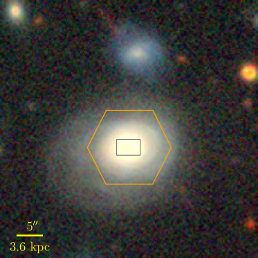
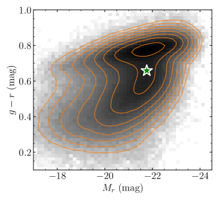
في §2، نناقش تحليلنا للرصدات الراديوية الأخيرة لهذه المجرة، ونقدم قياسنا لتشكلها الراديوي §2.1 والطيف §2.2. في §3، نناقش تحليل MaNGA الحديث (§3.1) وGMOS (§3.2) أرصاد IFU لهذا المصدر. في §4.1، نقدم قياساتنا للمادة النسبية (§4.1.1)، الحركيات (§4.1.2)، والغاز المتأين (§4.1.3) في هذا التدفق الخارجي. في §4.2، نناقش العلاقة بين هذا التدفق الخارجي و AGN في هذه المجرة، بينما في §4.3 نناقش التفاعل بين هذا التدفق الخارجي والوسط المحيط. في §5 نلخص نتائجنا وآثارها. في جميع أنحاء الورقة نستخدم مسافة اللمعان Mpc، مسافة ذات حجم زاوي Mpc ومقياس تصحيح علم الكونيات 1.397 kpc arcsec-1 وفقًا لـ NASA/IPAC Extragalactic Database (NED)، بافتراض CDM علم الكونيات المسطح km s-1 Mpc-1, و .
| Parameter | Studied galaxy |
|---|---|
| R.A. Dec. [J2000] | 09:46:50.18 +43:25:25.8 |
| 146.709110 43.423861 | |
| IDs | SDSS J094650.17+432525.8 |
| WISEA J094650.18+432525.8 | |
| LEDA 2220412 | |
| MaNGA-ID | 1-166919 |
| Plate-IFU | 8459-3702 |
| Redshift | 0.07221 |
| Luminosity distance | 330 Mpc |
| Angular-size distance | 287 Mpc |
| Scale | 1.39 kpc arcsec-1 |
| Galactic aaانقراضات المجرة مأخوذة من خرائط Schlegel et al. (1998). | 0.0478 mag |
| (-band) bbهذه المعلمات مأخوذة من NASA-Sloan Atlas كما هو منصوص عليه بواسطة Marvin (Cherinka et al., 2019). | 4.0″ |
| M⋆bbهذه المعلمات مأخوذة من NASA-Sloan Atlas كما هو منصوص عليه بواسطة Marvin (Cherinka et al., 2019). | |
| bbهذه المعلمات مأخوذة من NASA-Sloan Atlas كما هو منصوص عليه بواسطة Marvin (Cherinka et al., 2019). | 0.658 |
| Project | VLA/16B-082 (AG984) | ||
|---|---|---|---|
| Observation Date | 2016 Nov 13 | 2016 Oct 3 | 2017 Dec 30 |
| Band (Frequency) | L (1-2 GHz) | S (2-4 GHz) | C (4-8 GHz) |
| Configuration | A | A | B |
| Time on Source | 16m24s | 21m52s | 24m40s |
| Thermal RMSaaRMS الصورة بسبب الضوضاء الحرارية، تم حسابها باستخدام VLA Exposure Calculator بافتراض الوزن ”الطبيعي”. | bbتم حسابه بافتراض عرض نطاق ترددي قدره 0.6 جيجاهرتز لحساب تداخل الترددات الراديوية (RFI) في هذا النطاق. | ccتم حسابه بافتراض عرض نطاق ترددي قدره 1.5 جيجاهرتز لحساب RFI في هذا النطاق. | ddتم حسابه بافتراض عرض نطاق ترددي يبلغ 3.35 جيجاهرتز لحساب RFI في هذا النطاق. |
| Field of Vieweeطاقة نصف العرض الكامل (FWHP) للشعاع الأساسي. | 30′ | ||
| L.A.S.ffأكبر مقياس زاوي (LAS) من الجدول 3.1.1 JVLA Resolution Webpage، مقسومًا على 2 لحساب قصر وقت مصدر هذه الملاحظات. | |||
| Number of Spectral Windows | 16 | 16 | 32 |
| Number of Spectral Channels/Window | 64 | 64 | 64 |
| Width of Spectral Channels | 1 MHz | 2 MHz | 2 MHz |
2 ملاحظات المصفوفة الكبيرة جدًا جانسكي
لقياس خصائص الانبعاث الراديوي لمجرة MaNGA 1-166919 بشكل أفضل، قمنا بتحليل البيانات التي تم جمعها في أرصاد Jansky Very Large Array (JVLA) الثلاثة لهذه المجرة المدرجة في الجدول 2. لكل رصد، تم تحويل ملفات ASDM الأولية إلى مجموعة قياس (MS) باستخدام مهمة importevla المضمنة في إصدار تطبيق برنامج علم الفلك المشترك (casa؛ McMullin et al. 2007) 5.1.2-4، وتمت معايرته باستخدام VLA CASA Calibration Pipeline 5.1.2. تمت معايرة مقياس التأخير وممر النطاق وكثافة التدفق باستخدام ملاحظات قصيرة لـ 3C286 (J1331+3030)، في حين تمت معايرة المكاسب باستخدام ملاحظات الكوازار J0920+446 (B3 0917+441). تم بعد ذلك تصوير البيانات التي تمت معايرتها باستخدام مهمة casa tclean باستخدام الوزن الطبيعي لتعظيم الحساسية (على حساب الدقة الزاوية). يؤدي عرض النطاق الترددي الجزئي الكبير لمجموعات البيانات هذه إلى اختلافات كبيرة في الحزم الأولية والمركبة وتدفق المصدر الجوهري عبر النطاق، والذي يمكن أن يخلق شوائب تصويرية في الصور الناتجة. للتخفيف من هذه التأثيرات، قمنا بفك التفاف الصورة باستخدام خوارزمية التصوير التركيبي متعددة الترددات (MTMFS) (Rau and Cornwell, 2011). أثناء عملية فك الالتفاف، تم تنعيم الخرائط المتبقية على مقاييس 0 و4 و20 بكسل لتحسين تحديد المصادر ذات الأحجام الزاوية المختلفة. علاوة على ذلك، تم الكشف عن تدفق كافٍ في النطاقين L وS في الميدان لاستخدام مهمة casa gaincal لإعادة حساب معايرة الطور بافتراض نموذج الكثافة الناتج عن هذا التصوير، مع تطبيق جدول الكسب الجديد على البيانات باستخدام casa appylcal. أخيرًا، قبل أي تحليل إضافي، تم تصحيح الكثافة الإجمالية وخرائط الفهرس الطيفي الناتجة لتوهين الحزمة الأولية باستخدام مهمة casa widebandpbcor، والتي تمثل التغييرات في الحزمة الأولية عبر النطاق الترددي الجزئي الكبير لمجموعات البيانات هذه. يتم سرد خصائص الصور الناتجة في الجدول 3، وأسفرت هذه العملية عن صور ذات خلفية مماثلة لحد الضوضاء الحرارية.
| Band (Frequency) | L (1-2 GHz) | S (2-4 GHz) | C (4-8 GHz) |
|---|---|---|---|
| Pixel Size | |||
| Image Size [pixels] | |||
| Self-calibration | 1 iter | 1 iter | None |
| Beam | |||
| Image RMSaaRMS هو ”جذر متوسط مربع” لكثافة التدفق داخل منطقة خالية من المصدر بالقرب من MaNGA 1166919. | |||
| Dynamic Rangebbالنطاق الديناميكي هو نسبة كثافة التدفق القصوى إلى RMS حول المصادر الأكثر سطوعًا في المجال. |
في §2.1، نقدم تحليلنا للصور المنتجة من البيانات المعايرة، بينما في §2.2 نقدم قياساتنا لطيف الانبعاث الراديوي لهذه المجرة.
2.1 مورفولوجيا الراديو
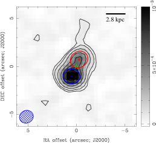
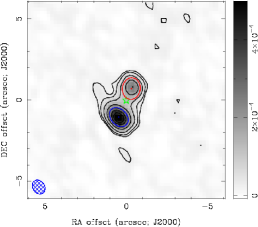
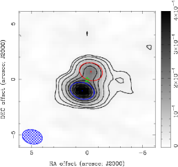
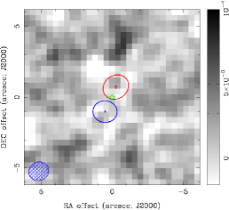
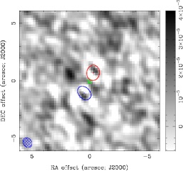
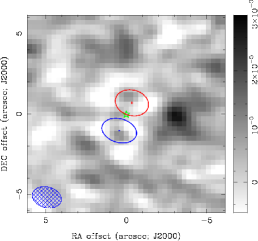
كما هو مبين في الشكل 3، يتكون الانبعاث الراديوي في جميع النطاقات الثلاثة من فصين على الجانبين المتقابلين من المركز البصري للمجرة، مع مكون SE أكثر سطوعًا باستمرار من NW. علاوة على ذلك، فإن مدى الانبعاث الراديوي أصغر بكثير من الحجم البصري لهذه المجرة (انظر الشكل 4). لقياس خصائص مكونات الفصوص، لاءمنا توزيع الكثافة في المركزي لكل صورة مع دالتين غاوسيتين باستخدام مهمة miriad (Sault et al., 1995) imfit. يتم سرد الخصائص الناتجة لكلا المكونين في الجدول 4، مع حساب الخطأ في كثافة التدفق المتكاملة باستخدام المعادلة 7 في وثائق NVSS Source Catalog. يمكن مقارنة جذر متوسط مربع الصور المتبقية (الجدول 4) مع الصورة بأكملها (الجدول 3)، مما يشير إلى عدم الحاجة إلى مكونات إضافية. يتم دعم هذه الاستنتاجات من خلال عدم وجود هياكل مهمة في الصور المتبقية (الشكل 3) - مع الاستثناء المحتمل عند جيجاهرتز (النطاق C) حيث يوجد الزائد غرب مركز المجرة. علاوة على ذلك، فإن المراكز والأحجام الزاوية (المفكوكة) للفصين متسقة عبر النطاقات الثلاثة، مما يشير إلى أن هذه النتائج قوية.
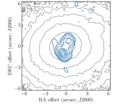
| Band (Frequency) | L (1-2 GHz) | S (2-4 GHz) | C (4-8 GHz) |
|---|---|---|---|
| SE Lobe | |||
| Peak Flux Density | |||
| Integrated Flux Density [mJy] | |||
| offsetaaتم القياس من مركز الميدان، | |||
| offsetaaتم القياس من مركز الميدان، | |||
| Major Axis | |||
| Minor Axis | |||
| Position Angle | |||
| Deconvolved Size | |||
| Physical (deconvolved) size | |||
| NW Lobe | |||
| Peak Flux Density | |||
| Integrated Flux Density [mJy] | |||
| offsetaaتم القياس من مركز الميدان، | |||
| offsetaaتم القياس من مركز الميدان، | |||
| Major Axis | |||
| Minor Axis | |||
| Position Angle | |||
| Deconvolved Size | |||
| Physical (deconvolved) size | |||
| Residual Image RMS | 23.4 | 10.9 | 7.0 |
2.2 الطيف الراديوي
من أجل قياس الخصائص الفيزيائية للبلازما التي ينبعث منها الراديو، من الضروري أولاً تحديد آلية الانبعاث الأساسية. وهذا بدوره يتطلب تحديد طيف المصدر الراديوي، وهو ما نقوم به باستخدام طريقتين: قياس كثافة التدفق لكلا المكونين في الصور ضيقة النطاق لهذه المجرة (§2.2.1)، والمؤشر الطيفي () خرائط داخل كل نطاق تم إنتاجها بواسطة تفكيك MTMFS الموضح في §2.1 (§2.2.2).
2.2.1 صور النطاق الضيق
تختلف كثافات التدفق المتكاملة للفصوص SE وNW، كما تم قياسها من الصور ذات النطاق العريض التي تمت مناقشتها أعلاه، بشكل كبير بين النطاقات الثلاثة المرصودة. لقياس كيفية تغير كثافة تدفق هذه المكونات مع التردد بشكل أفضل، قمنا أولاً بتصوير مجموعات فرعية متجاورة من النوافذ الطيفية (SPWs) داخل كل نطاق، وبعد ذلك - كما في §2.1، ولاءمنا الصورة الناتجة مع دالتين غاوسيتين لقياس كثافة التدفق المتكاملة لكل فص. تم تجميع SPWs بحيث يكون هناك تغيير في كثافة التدفق للفص NW الخافت بافتراض أن طيف الراديو المستمر في راديو التردد هذا موصوف جيدًا من خلال قانون قوة واحد مع مؤشر طيفي ، القيمة الناتجة عن الملاءمة قانون القدرة كثافات التدفق المشتقة من الصور ذات النطاق العريض (الجدول 4). تم إنتاج هذه الصور أيضًا باستخدام المهمة casa tclean، كما في §2.1، مرة أخرى باستخدام الوزن الطبيعي وبنفس حجم البكسل والصورة كما كان من قبل، باستخدام الخوارزمية المفكوكة ”متعددة المقاييس”. (Cornwell, 2008) نظرًا لأن انخفاض عرض النطاق الترددي الجزئي لمجموعة البيانات جعل المصطلح الطيفي الإضافي غير ضروري. استخدمنا مرة أخرى مهمة miriad imfit لملاءمة منطقة المركزية لكل صورة مع دالتين غاوسيتين. في هذه الملاءمات، تم السماح بتغير ذروة التدفق والحجم والاتجاه لكلا القطع الناقص، وترد كثافات التدفق المتكاملة الناتجة لكل من الفصين SE وNW في الجدول 5.
| Band | SPWaaنطاق النوافذ الطيفية (SPWs) المستخدم في النطاق المرتبط. | bbالتردد المركزي للنطاق الفرعي. | ccنطاق التردد داخل النطاق الفرعي. | ddكثافة التدفق المتكاملة للفص SE. | eeكثافة التدفق المتكاملة للفص NW. |
|---|---|---|---|---|---|
| [GHz] | [GHz] | [mJy] | [mJy] | ||
| L | 1.200 | 0.384 | |||
| L | 1.519 | 0.192 | |||
| L | 1.839 | 0.352 | |||
| S | 2.244 | 0.512 | |||
| S | 2.691 | 0.384 | |||
| S | 3.126 | 0.488 | |||
| S | 3.691 | 0.600 | |||
| C | 4.231 | 0.512 | |||
| C | 4.871 | 0.768 | |||
| C | 5.679 | 0.848 | |||
| C | 6.551 | 0.896 | |||
| C | 7.511 | 1.024 |
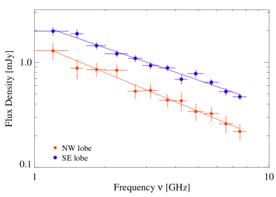
يظهر الطيف الراديوي الناتج في الشكل 5، مع المعلمات المشتقة من تركيب قانون طاقة واحد على كثافات التدفق المتكاملة لكل من فصوص الراديو NW وSE الواردة في الجدول 6. كما هو موضح في الشكل 5، يقوم هذا النموذج بعمل جيد في إعادة إنتاج كثافات التدفق المرصودة. لقد حاولنا أيضًا ملاءمة كثافات التدفق هذه مع كل من قانون القدرة المكسور (كما هو متوقع إذا كان تبريد السنكروترون مهمًا عند الترددات الأعلى) وقانون القدرة مع قطع أسي عند الترددات المنخفضة (كما هو متوقع من الامتصاص الحر على طول خط البصر)، ولكن هذه النماذج الأكثر تعقيدًا لم تنتج ملاءمة محسنة بشكل ملحوظ للبيانات.
| Parameter | SE lobe | NW lobe |
|---|---|---|
| aa1 كثافة التدفق المتكاملة جيجاهرتز | mJy | mJy |
2.2.2 خرائط الفهرس الطيفي
تفترض التقنية المستخدمة للحصول على خرائط الفهرس الطيفي أنه يمكن التعبير بدقة عن كثافة التدفق عند تردد معين وموقع السماء على النحو التالي:
| (1) |
ثم يحل بشكل متكرر قيمة و في كل موقع في السماء. كما هو مطبق في الأمر casa widebandpbcor، يتم استخدام القيمة المشتقة لـ لحساب المؤشر الطيفي ضمن نطاق تردد بيانات الإدخال في كل بكسل من الصورة الناتجة.
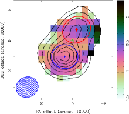
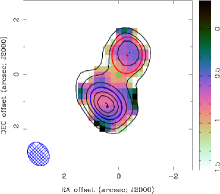
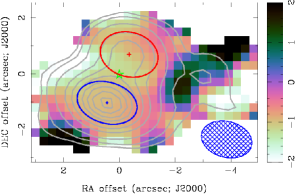
كما هو موضح في الشكل 6، في جميع النطاقات الثلاثة، يكون المؤشر الطيفي للبكسلات في SE وNW هو ، بما يتوافق مع القيمة المشتقة من التحليل الموضح في §2.2.1 (جدول 6). ومع ذلك، في جميع النطاقات الثلاثة، تكون قيم في الفص SE، بشكل عام، أكثر انحدارًا (أكثر سلبية) من تلك الموجودة في الفص NW، مع اختلاف في المؤشر الطيفي (الشكل 6) والتي قد لا تكون ذات دلالة إحصائية. ومع ذلك، في النطاق C، يشير هذا التحليل إلى وجود انبعاث راديوي من الطيف المسطح (). على سبيل المثال، يتم قياس هذا المؤشر الطيفي للذروة الواقعة غرب الفصين. يشير هذا إلى أن هذا المكون له أصل فيزيائي مختلف عن الفصين اللذين سيتم مناقشتهما في §4.3.
3 تحليل بيانات الوحدة الميدانية المتكاملة
كما هو مذكور في §1، تشير الدراسات السابقة لـ MaNGA 1-166919 إلى أنه يحتوي على تدفق خارجي على مقاييس الكيلو فرسخية (على سبيل المثال Wylezalek et al. 2017). في هذا القسم، نقوم بتحليل البيانات المأخوذة من هذا المصدر خلال رصدين للوحدة الميدانية المتكاملة (IFU)، واحدة في مرصد Apache Point كجزء من مسح Sloan Digital Sky Survey IV (SDSS-IV; Blanton et al. 2017) لرسم خرائط المجرة القريبة في مشروع Apache Point Observatory (MaNGA; Bundy et al. 2015)، والآخر باستخدام تلسكوب Gemini-North مع مخطط الطيف متعدد الكائنات (GMOS؛ Hook et al. 2004; Allington-Smith et al. 2002). كما هو مدرج في الجدول 7، مجموعتا البيانات هاتان مجانيتان: بيانات MaNGA تمتد على نطاق أوسع من وتغطي جزءًا أكبر من المجرة، في حين أن بيانات GMOS تتمتع بدقة زاويّة والطيفية أفضل. في حين تم استخلاص النتائج من مجموعتي البيانات مسبقًا بواسطة Wylezalek et al. (2017)، فقد استخدمنا تقنية مختلفة لتحليل MaNGA (§3.1) وGMOS (§3.2) البيانات كما هو موضح أدناه - والتي تتفق بشكل عام مع العمل السابق الذي قام به Wylezalek et al. (2017).
| Property | MaNGA | GMOS |
|---|---|---|
| Wavelength range [Å] | ||
| Spectral resolutionaaبالنسبة لبيانات MaNGA، يتم تعريف ذلك على أنه في الموضع المرصود لخط H. بالنسبة لبيانات GMOS هذه، تم اشتقاق هذه القيمة بواسطة Wylezalek et al. (2017). | ||
| Field-of-View [″] | bbيتوافق مع أكبر أبعاد حقل رؤية MaNGA السداسي في المكعب الطيفي النهائي بعد مراعاة ثبات الألوان أثناء المراقبة. | |
| Field-of-View [kpc] | ||
| Spatial resolution [″] |
3.1 بيانات MaNGA
يتكون مسح MaNGA من عمليات رصد IFU (Drory et al., 2015) لـ 10000 المجرات في الكون المجاور والتي تم اختيارها لجمع عينات جماعية من مجموعة واسعة من الكتلة النجمية والألوان (Wake et al., 2017). تمت ملاحظة كل مجرة باستخدام حزم من 2″ التي تغطي (1.5-2.5) نصف قطر الضوء العالي الفعال للهدف، مع تمت ملاحظة كل مجرة باستخدام 3 تعريضات مترددة لملء الفجوات بين الألياف في حزمة (Law et al., 2015; Yan et al., 2016a). تمت بعد ذلك معايرة هذه البيانات باستخدام الإجراء الموضح في (Yan et al., 2016b)، وتم تقليلها باستخدام خط الأنابيب الذي طورته Law et al. (2016). تم إتاحة المكعب الطيفي MaNGA الذي تمت معايرته لـ MaNGA 1-166919 للجمهور في إصدار البيانات الخامس عشر من مسح سلون الرقمي للسماء (DR15; Aguado et al. (2019))، بالإضافة إلى النتائج المستمدة من خط أنابيب تحليل البيانات الموصوف بواسطة Westfall et al. (2019) - والذي يتضمن قياسات لخصائص خط الانبعاث التي تم إجراؤها باستخدام الإجراء الموضح بواسطة Belfiore et al. (2019). في حين أنه يمكن الوصول إلى هذه النتائج باستخدام مجموعة أدوات Marvin (Cherinka et al., 2019)، فقد قمنا بتحليل مجموعة البيانات هذه باستخدام الإجراء الموضح أدناه بهدف قياس خصائص المواد المتدفقة بشكل أفضل. في §3.1.1، نصف كيف قمنا بقياس خصائص المجموعة النجمية لـ MaNGA 1-166919، وفي §3.1.2 نصف الطريقة باستخدام قياس خصائص الغاز المتأين في هذه المجرة.
3.1.1 الملاءمة النجمية
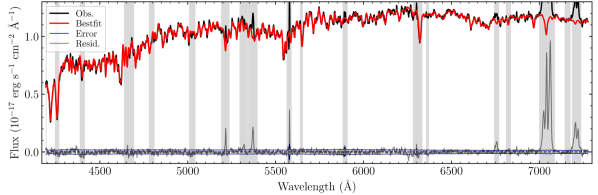
استخدمنا حزمة التركيب الطيفي الكاملة NBursts (Chilingarian et al., 2007a, b) لاشتقاق خصائص المجموعة النجمية لهذه المجرة، وكذلك تحديد المساهمة النجمية في طيفها. تستخدم هذه الطريقة خوارزمية تصغير لملاءمة الطيف في كل بكسل (مكاني) بنموذج مشتق من توسيع الطيف المتوقع من نموذج سكاني نجمي مع توزيع معلمات Gauss-Hermite (van der Marel and Franx, 1993) لسرعة خط البصر في هذا الموضع. لتجنب انحياز المعلمات الناتجة بشكل منهجي، قمنا بإخفاء الأطوال الموجية المقابلة لخطوط الانبعاث القوية (على سبيل المثال الشكل 7). تم اختيار الأطياف النجمية من شبكة من نماذج PEGASE.HR عالية الدقة للتجمعات النجمية البسيطة (SSP) (Le Borgne et al., 2004) استنادًا إلى ELODIE3.1 المكتبة النجمية التجريبية (Prugniel et al., 2007) بافتراض دالة الكتلة الأولية لسالبيتر (Salpeter, 1955)، ملفوفة مسبقًا مع وظيفة انتشار الخط المتوفرة داخل مكعب بيانات MaNGA لمراعاة التوسيع الآلي. في حين أن الخصائص المشتقة للغاز المتأين تعتمد على اختيار النماذج النجمية، فإن الإشارة إلى الضوضاء العالية لبياناتنا تشير إلى أن هذا سيكون له تأثير صغير (Chen et al., 2018). ويظهر مثال لنتائج هذا الإجراء في الشكل 7.
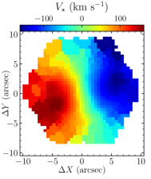
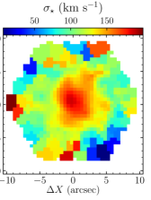
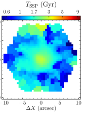
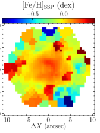
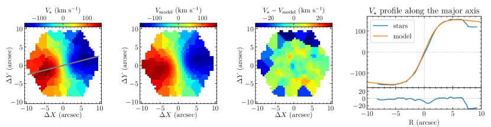
لكل طيف، يقوم هذا النموذج بإرجاع سرعة خط البصر النجمي ، وسرعة التشتت ، والعمر النجمي المكافئ والمعادن [Fe/H]SSP من أفضل أنواع SSP. للتأكد من موثوقية المعلمات المشتقة، قمنا بجمع جميع السباكسلات بنسبة إشارة إلى ضوضاء (مقدرة في طيف الاستمرارية النجمية في نافذة طيفية ضيقة 10Å تتمحور حول 5100 Å في إطار المجرة) في المناطق المكانية باستخدام باستخدام خوارزمية Voronoi التكيفية التي طورتها Cappellari and Copin (2003). كما هو موضح في الشكل 8، فإن التوزيع المكاني للسرعة النجمية يوحي بوجود قرص نجمي يدور بانتظام - بما يتوافق مع الشكل الحلزوني المستنتج من شكله البصري (على سبيل المثال، 88% من مستخدمي Galaxy Zoo صنفوا هذا المصدر على أنه مجرة حلزونية؛ Lintott et al. 2008, 2011). علاوة على ذلك، فإن زيادة تشتت السرعة النجمية وعمر النجم الملاحظ باتجاه مركز المجرة يدل على انتفاخ نجمي، مع ذروة تشتت السرعة وتوزيع السرعة خفيف الوزن (هنا قمنا بمتوسط قيم داخل فتحة بيضاوية تبلغ 4″ الحجم باستخدام الإهليلجية ( و - أنصاف المحاور الصغرى والكبرى) المقدرة من نظيرات الصورة الضوئية) داخل المركز 4″ من .
كما هو موضح في الشكل 8، فإن توزيع سرعة خط البصر النجمي للمكون النجمي يدل على وجود مجموعة نجمية تدور بشكل منتظم. لقد قمنا بتصميم نموذج لمجال السرعة النجمية هذا من خلال افتراض أنه بالنسبة إلى سباكسل يقع عند معين يتم قياسه بالنسبة إلى مركز المجرة، فإن النجوم المنبعثة لها سرعة خط البصر:
| (2) |
حيث تكون سرعة الدوران السمتية في مركز القرص («المستوى المجري») هي:
| (3) |
مع هي السرعة النظامية للمجرة، هو عامل هندسي يحول مسافة السماء المتوقعة بين سباكسل في مركز المجرة إلى المسافة على طول المستوى المجري ، و هي زاوية ميل القرص، هو نصف القطر حيث تبلغ السرعة حدًا أقصى ثابتًا القيمة في حالة ، و تصف النمو () أو رفض () من لـ . ثم حددنا قيم ، ، ، ، وتوجيه القرص المجري على مستوى السماء باستخدام روتين التصغير .
3.1.2 ملاءمة خطوط الانبعاث
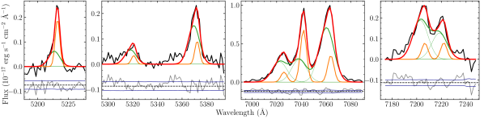
لقياس خصائص خطوط الانبعاث التي ينتجها الغاز المتأين في هذه المجرة، قمنا أولاً بطرح التسلسل النجمي، كما هو مشتق في §3.1.1، من الطيف المرصود في كل منطقة، مع وزن مساهمة السباكسلات المكونة بشكل مناسب. يظهر مثال على طيف خط الانبعاث الناتج في الشكل 10. نقوم بعد ذلك بتقدير نسبة الإشارة إلى الضوضاء (SNR) لأطياف خط الانبعاث الناتجة في كل سباكسل باستخدام التدفق الإجمالي في خطوط +[N ii]، وإزالتها من التحليلات الإضافية جميع السباكسلات باستخدام . كما هو موضح في الشكل 11، فإن هذا المطلب يستبعد في المقام الأول السباكسلات في المناطق الخارجية لهذه المجرة - بما يتجاوز المدى المرصود لانبعاثها الراديوي (الشكل 3). استخدمنا بعد ذلك خوارزمية Voronoi التي طورتها Cappellari and Copin (2003) لدمج السباكسلات المتبقية مكانيًا في مناطق بها .
كما هو موضح في الشكل 10، لم تكن ملفات تعريف خطوط الانبعاث في سباكسل معين موصوفة جيدًا دائمًا بواسطة مركب غاوسي واحد. ونتيجة لذلك، قمنا بنمذجة طيف خط الانبعاث في كل سباكسل بافتراض مكونين غاوسيين. لسوء الحظ، فإن استخدام روتين التقليل لنمذجة طيف خط الانبعاث في كل سباكسل مع مكونين غاوسيين مستقلين أدى إلى نتائج غير موثوقة بسبب - في جزء كبير منها - الانحطاطات الكامنة في هذا النموذج. ونتيجة لذلك، قمنا بتطوير إجراء لملاءمة أطياف خط الانبعاث في جميع السباكسلات كمجموع مكونين:
-
•
مكون ”رئيسي” يهيمن عليه الغاز الذي يدور بانتظام في قرص هذه المجرة، و
-
•
مكون ”التدفق الخارجي”.
في هذا التحلل، أخذنا في الاعتبار التشتت لكل موضع، وافترضنا أن التوزيع المكاني للخصائص الحركية للغاز في المكون ”الرئيسي” موصوف جيدًا من خلال وصفة قرص يدور بانتظام الواردة في المعادلات 2 & 3.
تم اشتقاق المعلمات الأولية على افتراض أن المكون ”الرئيسي” يهيمن على الانبعاث في كل سباكسلس، ولكن القيم النهائية نتجت عن تركيب أطياف خط الانبعاث في وقت واحد للمكون ”الرئيسي” و”التدفق الخارجي”، كما هو موضح أدناه.
نقوم بعد ذلك بإعادة ضبط طيف خط الانبعاث في كل صندوق مكاني، بافتراض أن ملف تعريف كل خط طيفي موصوف بواسطة مركبين غاوسيين. المعلمات الحرة في هذا النموذج هي:
-
•
سرعة خط البصر وتشتت السرعة الجوهرية (تشتت السرعة المرصودة لخط حيث هو تشتت السرعة الجوهرية و هو الدقة الآلية) للغاز المنبعث،
-
•
التدفق،
-
•
نسبة بالمر ,
-
•
[N ii]6584/,
-
•
([S ii]6717+[S ii]6731)/,
-
•
[O iii]5007/, و
- •
لكل من المكونات ”الرئيسية” و”التدفق الخارجي”. لتحديد قيم هذه الكميات في كل منطقة مكانية، استخدمنا طريقة التقليل Levenberg-Marquardt كما تم تنفيذها بواسطة حزمة lmfit (Newville et al., 2016) المستندة إلى Python لتحديد مجموعة القيم التي قللت من . علاوة على ذلك، طلبنا - بالنسبة لكلا المكونين - أن تُرجع ملاءماتنا قيمًا ضمن المجالات التالية:
-
•
-
•
-
•
-
•
-
•
,
كما هو متوقع من العمليات الفيزيائية التي تحكم خطوط الانبعاث هذه وملاحظات عينات كبيرة من المجرات الأخرى (على سبيل المثال، Baldwin et al. 1981; Osterbrock and Ferland 2006; Proxauf et al. 2014). لقد طلبنا أيضًا، بالنسبة لكل منطقة مكانية، أن تكون القيمة المجهزة للمكون الرئيسي ضمن من قيمة المكون “الرئيسي” المشتق من التحليل الأولي الموضح أعلاه. باستخدام هذا الإجراء، نحن نلائم في نفس الوقت خصائص المساهمة ”الرئيسية” و”التدفق الخارجي” في طيف خط الانبعاث في كل سباكسل. يظهر مثال على نتائج إجراء التركيب هذا في الشكل 10.
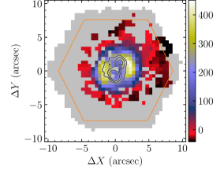
لتقييم الأهمية الإحصائية لمكون ”التدفق الخارجي” في سباكسل معين، قمنا بحساب إحصائية معيار المعلومات البايزية (BIC) (Schwarz, 1978; Liddle, 2007):
| (4) |
حيث هو عدد نقاط البيانات، هو عدد المعلمات الحرة في النموذج، و هو نتيجة مطابقة البيانات مع النموذج المذكور، الناتج عن ملاءمة الانبعاث طيف خطي لمنطقة معينة مع مركب غاوسي واحد (BIC1) ومركبين غاوسيين (BIC2). كما هو موضح في الشكل 11، BIC1 أعلى بكثير من BIC2 في السباكسلات الأعمق، مما يعني بقوة أن مكون ”التدفق الخارجي” مهم في هذه المناطق. تتزامن هذه السباكسلات أيضًا مع الانبعاثات الراديوية المكتشفة من هذه المجرة، مما يشير إلى وجود صلة فيزيائية بين ”التدفق الخارجي” للغاز المتأين والبلازما المنبعثة من الراديو. في السباكسلات خارج انبعاث الراديو، يكون BIC1 إما أكبر قليلاً أو أصغر من BIC2 - مما يعني ضمناً أن مكون ”التدفق الخارجي” غير موجود أو جزء هامشي من الغاز المتأين في هذه المواقع. ونتيجة لذلك، في خرائط 2D لمعلمات مكون “التدفق الخارجي”، نقوم بإخفاء السباكسلات باستخدام ، بينما تظهر تلك التي تحتوي على باللون الشفاف اللون. علاوة على ذلك، في خرائط المعلمات للمكون الرئيسي، نقدم قيمًا من ملاءمة المكون الواحد للسباكسلز مع ، والقيم من ملاءمة المكونين لتلك السباكسل حيث .
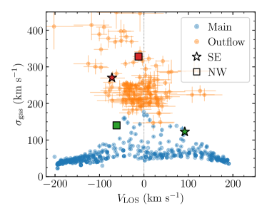
يتجلى الفرق بين المكونات ”الرئيسية” و”التدفق الخارجي” ليس فقط في الدلالة الإحصائية للملاءمات، ولكن أيضًا في الخصائص المشتقة للغاز المتأين. كما هو موضح في الشكل 12، فإن تشتت السرعة لمكون ”التدفق الخارجي” أعلى بشكل عام من المكون ”الرئيسي” - حتى بالنسبة للسبكسلات ذات سرعات خط البصر المماثلة. الشكل ”V” لمكون ”التدفق الخارجي” في الرسم التخطيطي الموضح في الشكل 12 يوحي بهندسة ثنائية الشكل (على سبيل المثال، Bae and Woo 2016). علاوة على ذلك، كما هو موضح في الشكل 13، فإن نسب الخطوط المقاسة للمكونين ”الرئيسي” و”التدفق الخارجي” تشغل مناطق مختلفة جدًا في مخططات Baldwin وPhilips وTelervich (BPT) - مما يشير إلى أنها تتأين بواسطة آليات مختلفة (Baldwin et al., 1981). ستتم مناقشة التبعات الفيزيائية لكلتا النتيجتين بشكل أكبر في §4.1.2.
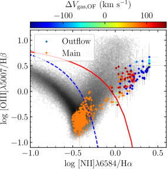
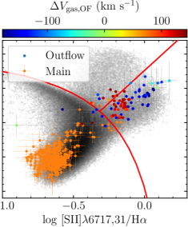
3.2 بيانات GMOS
بالإضافة إلى استخدام بيانات MaNGA لقياس خصائص الغاز المتأين في هذه المجرة (§3.1)، قمنا أيضًا بتحليل الطيف الذي تم الحصول عليه في ملاحظات GMOS IFU الأخيرة - والتي تم عرض نتائجها سابقًا بواسطة Wylezalek et al. (2017). تم التقاط بيانات GMOS على Gemini-North في وضع الشق الواحد، وغطت المنطقة المركزية لهذه المجرة (الشكل 1). الدقة الزاوية لمجموعة البيانات هذه محدودة برؤية الغلاف الجوي أثناء هذا الرصد، والمقدرة بـ ، وقد قامت هذه الملاحظات بقياس الطيف بين Å بدقة طيفية ، الموافق للتشتت الآلي km s-1(Wylezalek et al., 2017) (جدول 7). تم تقليل هذه البيانات باتباع الإجراء الموضح بواسطة Wylezalek et al. (2017). تتمثل الاختلافات الأساسية بين تحليلنا لهذه البيانات وتلك التي قدمتها Wylezalek et al. (2017) في نمذجة المساهمة النجمية في الطيف المرصود والتجميع المكاني المختلف لأطياف خط الانبعاث المستنتج - كما هو موضح أدناه.
تمامًا كما هو الحال بالنسبة لبيانات MaNGA §3.1، فقد حددنا أولاً المساهمة النجمية في الطيف المرصود في موقع معين في السماء. استخدمنا مرة أخرى حزمة NBursts لملاءمة الطيف المرصود مع ذلك الذي تنبأت به نماذج SSP الموضحة في §3.1.1. نظرًا لانخفاض نسبة الإشارة إلى الضوضاء (SNR) نسبيًا في هذه المنطقة، فقد قمنا بإصلاح العمر النجمي المكافئ والمعدنية [Fe/H]SSP في سباكسل GMOS معين إلى القيم المشتقة في سباكسل MaNGA في نفس موضع السماء. ونتيجة لذلك، أعاد هذا التركيب سرعة خط البصر النجمي وسرعة التشتت لكل بكسل سماء GMOS. قمنا بعد ذلك بطرح المساهمة النجمية المتوقعة في كل بكسل سماء من بيانات GMOS المقطوعة لتحديد طيف خط الانبعاث في كل موضع.
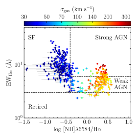
قبل استخدام هذه الأطياف لقياس خصائص الغاز المتأين، كان من الضروري أولاً تجميع أطياف خط الانبعاث بشكل تكيفي في مناطق ذات إشارة إلى ضوضاء كافية - كما حدث مع مكعب بيانات MaNGA (§3.1.2). استخدمنا مرة أخرى خوارزمية Voronoi التكيفية التي طورتها Cappellari and Copin (2003) لدمج أطياف البيكسلات المكانية المجاورة باستخدام الحد الأقصى لنسبة الإشارة إلى الضوضاء (SNR) لكل تم قياس القناة ضمن مجمع الخطوط H+[N ii]، بحيث كان للأطياف المدمجة نسبة SNR إجمالية . استخدمنا بعد ذلك طريقة التقليل Levenberg-Marquardt المنفذة في حزمة Python المسماة lmfit (Newville et al., 2016) لملاءمة غاوسية مفردة في H، [N ii] و خطوط الانبعاث [S ii] (استبعدنا خطوط H و[O iii] من هذا التحليل بسبب انخفاض نسبة الإشارة إلى الضوضاء (SNR) عند حافة ممر نطاق GMOS). مرة أخرى، طلبنا أن تكون جميع الخطوط الثلاثة لها نفس سرعة خط البصر وسرعة تشتت عند موضع السماء المحدد، وتظهر التوزيعات المكانية الناتجة لهذه المعلمات في الشكل 15.
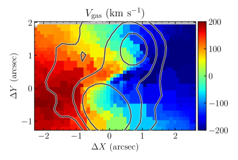
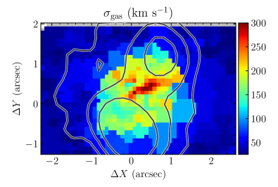
4 التفسير الفيزيائي
في هذا القسم، نستخدم الخصائص المقاسة في ملاحظات راديو JVLA (§2) وIFU (§3) التي تم تحليلها أعلاه لقياس خصائص المواد المرتبطة بالتدفق الخارجي. (§4.1) ونواة المجرة النشطة (AGN; §4.2) في هذه المجرة، بالإضافة إلى تأثير التدفق الخارجي على المجرة المضيفة. (§4.3).
4.1 التدفق الخارجي
كما ذكرنا سابقًا، فإن الانبعاث الراديوي المرصود من هذه المجرة يتزامن مكانيًا مع المناطق التي تحتاج إلى جاوسيين لوضع نموذج دقيق لأطياف خط الانبعاث (الشكل 11) المستمدة من مكعب بيانات MaNGA (§3.1.2) أيضًا كمناطق حيث يكون للغاز المتأين تشتت عالي السرعة (الشكل 15) كما هو مستمد من مكعب بيانات GMOS (§3.2). ونتيجة لذلك، فإننا نفترض في المناقشة أدناه أن الانبعاث الراديوي والبصري يتم إنتاجهما بواسطة مكونين مختلفين، ولكنهما مرتبطان، من المادة المتدفقة. وبذلك نكون قادرين على دراسة المحتوى النسبي (§4.1.1)، والحركية (§4.1.2)، والمحتوى الحراري (§4.1.3) في هذا التدفق الخارجي.
4.1.1 المكون النسبي
كما هو موضح في §2.2، يتم وصف طيف كل من فصوص الراديو SE وNW جيدًا بواسطة قانون القدرة مع المؤشر الطيفي ، بما يتوافق مع انبعاث السنكروترون الرقيق بصريًا الناتج عن الإلكترونات النسبية (و البوزيترونات) تتفاعل مع المجال المغناطيسي (على سبيل المثال، Pacholczyk 1970; Condon and Ransom 2016). في هذه الحالة، يعتمد سطوع الراديو المرصود على حجم ، والإلكترون النسبي ، والمغناطيسي. كثافة الطاقة للمنطقة المنبعثة. ومع ذلك، نظرًا لأن طاقة السنكروترون التي يشعها إلكترون الطاقة في مجال مغناطيسي ذو قوة هي (على سبيل المثال، Pacholczyk 1970; Rybicki and Lightman 1986):
| (5) |
حيث و هما، على التوالي، شحنة وكتلة الإلكترون و هي سرعة الضوء، بالنسبة لمعان وحجم راديو معين، لا يوجد حل فريد لـ و . ومع ذلك، هناك حد أدنى من الطاقة المجمعة (الإلكترون النسبي + المجال المغناطيسي) اللازمة لتشغيل مثل هذا المصدر عندما تكون (على سبيل المثال، Pacholczyk 1970; Rybicki and Lightman 1986; Condon and Ransom 2016. قوة المجال المغناطيسي هي (على سبيل المثال، Pacholczyk 1970; Condon and Ransom 2016):
| (6) |
حيث هي نسبة طاقة الأيون إلى الإلكترون، هو “ثابت” تعتمد قيمته على ، ، و (لـ ، ، و كما هو مشتق لكل من فصوص الراديو SE وNW (الجدول 6)، بوحدات cgs (Condon and Ransom, 2016))، و هو نصف قطر منطقة الانبعاث الكروية المفترضة، وطاقة الجسيمات النسبية (الإلكترونات + الأيونات) (على سبيل المثال، Pacholczyk 1970; Condon and Ransom 2016):
| (7) |
حيث هو ثابت آخر تعتمد قيمته على ، ، و (لـ ، ، و كما هو مشتق لكل من فصوص الراديو SE وNW (الجدول 6)، بوحدات cgs (Condon and Ransom, 2016)). نظرًا لأن هندسة 3D للمناطق التي ينبعث منها الراديو غير معروفة، فإننا نفترض أن لفص معين يقع بين نصف القطر المادي المستنتج من أصغر محور شبه صغير مفكك وأكبر محور شبه رئيسي مفكك مشتق من نمذجة الصور الراديوية عريضة النطاق لهذا المصدر (§2.1)، كما هو مذكور في الجدول 4. تم استنتاج شدة المجال المغناطيسي ”الحد الأدنى للطاقة” وطاقات الجسيمات النسبية لكل من الفصين SE وNW من قياساتنا لمورفولوجيا الراديو (§2.1) والطيف (§2.2) مذكورة في الجدول 8.
| Property | SE lobebbتم الحساب باستخدام الخصائص الطيفية الواردة في الجدول 6 والخصائص المورفولوجية الواردة في الجدول 4. | NW lobebbتم الحساب باستخدام الخصائص الطيفية الواردة في الجدول 6 والخصائص المورفولوجية الواردة في الجدول 4. |
|---|---|---|
| aaمحسوب لـ ، ، وقيمة الواردة في الجدول 1. | ||
| [kpc] | 0.450.82 | 0.490.85 |
| [G]ccمحسوبة على افتراض ، أي أن البلازما المنبعثة تتكون فقط من إلكترونات (بدون أيونات). | ||
| [ergs]ccمحسوبة على افتراض ، أي أن البلازما المنبعثة تتكون فقط من إلكترونات (بدون أيونات). |
باستخدام هذه المعلومات، يمكننا تقدير طاقة الإلكترونات المنبعثة من الراديو. انبعاث السنكروترون من إلكترون ذو طاقة في مجال مغناطيسي ذو قوة يصل إلى ذروته عند تردد (على سبيل المثال، Pacholczyk 1970; Rybicki and Lightman 1986):
| (8) |
ونتيجة لذلك، بالنسبة لـ و ، فإن طاقة الإلكترون المنبعث هي:
| (9) |
بالنسبة لنطاق التردد المرصود ومدى الوارد في الجدول 8، بالنسبة لكلا الفصين، يهيمن على الانبعاث الراديوي الإلكترونات. زمن تبريد السنكروترون لمثل هذه الجسيمات ، هو في كلا الفصين لطاقات الجسيمات المقدرة وشدة المجال المغناطيسي. يشير هذا إلى أن التبريد الإشعاعي يلعب دورًا ثانويًا في تطور الانبعاث الراديوي من الجسيمات النسبية في هذا التدفق الخارجي.
علاوة على ذلك، يمكن استخدام طيف السنكروترون للانبعاثات الراديوية المرصودة لتحديد طيف وأصل الإلكترونات التي تنبعث منها GeV. إشعاع السنكروترون الرقيق بصريًا مع طيف قانون القدرة هو نتيجة الانبعاث من الجسيمات ذات طيف طاقة قانون القدرة:
| (10) |
حيث هو عدد الجزيئات لكل وحدة طاقة في طاقة الجسيمات و هو مؤشر الجسيمات () (على سبيل المثال، Rybicki and Lightman 1986; Condon and Ransom 2016). بالنسبة للمؤشر الطيفي المُقاس لكل من الفصين SE وNW (§2.2، الجدول 6)، يشير هذا إلى – القيمة المتوقعة من الدرجة الأولى Fermi أو Diffusive Shock Acceleration (DSA؛ على سبيل المثال Fermi 1949, 1954). يتطلب DSA أن تعبر الجسيمات الصدمة عدة مرات (على سبيل المثال، Bell 1978a, b; Blandford and Ostriker 1978)، وتكتسب الطاقة في كل عبور صدمة. يعتمد طيف الجسيمات والمؤشر الطيفي لانبعاث السنكروترون الناتج عن هذه العملية على رقم ماخ للصدمة، حيث (على سبيل المثال، Berezhko and Ellison 1999; Guo et al. 2014; Di Gennaro et al. 2018):
| (11) |
يشير المؤشر الطيفي من الفصين SE وNW (§2.2، الجدول 6) إلى الجسيمات المنبعثة في كلا المكونين يتم تسريعهما في الصدمات باستخدام .
ومع ذلك، ينبغي لهذه الصدمات أيضًا تسريع الأيونات بكفاءة إلى طاقات عالية (على سبيل المثال، Guo et al. 2014). عمليات المحاكاة الحديثة (على سبيل المثال، Park et al. 2015) وملاحظات الجسيمات المتسارعة في الصدمة بأرقام ماخ مماثلة (على سبيل المثال، SNR 5.70.1; Joubert et al. 2016) تشير إلى نسبة طاقة الأيون إلى الإلكترون . إذا حدث ذلك أيضًا في هذه المجرة، فإن الحد الأدنى لإجمالي طاقات الجسيمات النسبية في الفصين SE وNW يكون أعلى من القيم الواردة في الجدول 8، أو بترتيب . بغض النظر عن القيمة الحقيقية لـ ، فإن الطاقة الأكبر في المكون النسبي لهذا التدفق الخارجي تشير إلى أنه يمكن أن يكون له تأثير كبير على المجرة المضيفة (على سبيل المثال، Mao and Ostriker (2018); Hopkins et al. (2020a)).
4.1.2 الحركيات
كما هو موضح في §4.1.1، يُعتقد أن الانبعاث الراديوي المرصود من MaNGA 1-166919 قد تم إنتاجه بواسطة إلكترونات تسارعت بسبب صدمة تنتشر عبر هذه المجرة. ومع ذلك، يشير العمل النظري إلى أن من المادة المصدومة يتم تسريعها إلى الطاقات النسبية (على سبيل المثال، Caprioli and Spitkovsky 2014; Caprioli et al. 2015)، مع تسخين الجزء الأكبر من المادة إلى درجة حرارة (على سبيل المثال، Faucher-Giguère and Quataert 2012; Caprioli and Spitkovsky 2014):
| (12) |
حيث هي كتلة الجسيم، هو ثابت بولتزمان، و هي سرعة الصدمة بالنسبة للبيئة المحيطة. إذا كان مرتفعًا بدرجة كافية، فسيتم إنشاء كمية وفيرة من فوتونات الأشعة فوق البنفسجية والأشعة السينية الناعمة في مقدمة الصدمة (على سبيل المثال، Raymond 1976; Allen et al. 2008). من المتوقع أن يكون للأطياف الناتجة عن المواد المتأينة بواسطة هذا الإشعاع نسب خط انبعاث (على سبيل المثال، Dopita and Sutherland 1995b; Allen et al. 2008) والتي تقع داخل منطقة إثارة التأين المنخفض (LIER) في مخطط BPT [S ii] (Kewley et al., 2006) (في الأدبيات، يُشار إلى هذا الانبعاث غالبًا على أنه ينشأ من ”منطقة الإثارة النووية منخفضة التأين”). (LINER) منذ أن تم تحديدها لأول مرة وبشكل أساسي في مراكز المجرات (على سبيل المثال، Heckman 1980; Heckman et al. 1981)، ومع ذلك، فقد وجد العمل اللاحق أن مثل هذا الانبعاث يمكن اكتشافه في جميع أنحاء المجرة (على سبيل المثال، Belfiore et al. 2016)، وبالتالي استخدم المصطلح الأكثر عمومية. في الواقع، كما هو موضح في الأشكال 13 & 16، تقع نسب خط الانبعاث للمادة ”التدفق الخارجي” إلى حد كبير ضمن منطقة LIER لمثل هذا المخطط. علاوة على ذلك، كما هو موضح في الشكل 16، تم اكتشاف انبعاث شبيه بـ LIER فقط في وسط هذه المجرة، ويوجد في الغالب في مكون ”التدفق الخارجي” للغاز المتأين. لذلك، يبدو من المحتمل أن يكون ”التدفق الخارجي” للغاز المتأين، كما تم استنتاجه من تحليلنا لبيانات MaNGA (§3.1.2) وGMOS (§3.2)، هو تهيمن عليها المواد المتأينة ضوئيًا بسبب الصدمة والتي تعمل أيضًا على تسريع الإلكترونات النسبية المسؤولة عن انبعاث الراديو المرصود. ومع ذلك، في العديد من المجرات، يُعتقد أن نسب الخطوط هذه ناتجة عن التأين الضوئي بواسطة نجوم ما بعد AGB (على سبيل المثال، Belfiore et al. 2016; Singh et al. 2013; Yan and Blanton 2012). من المتوقع أن تكون مثل هذه النجوم سائدة في التجمعات النجمية الأقدم () - كما يُستدل على المناطق الوسطى من هذه المجرة ( مليار سنة؛ الشكل 8) من اشتقاقنا لمجموعتها النجمية كما هو موضح في §3.1.1.
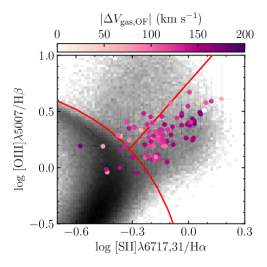
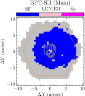
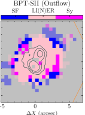
من الممكن التمييز بين هذه النماذج بقياس حركيات مكون ”التدفق الخارجي” المفترض للغاز المتأين في هذه المجرة ففي بيانات GMOS قدرنا ذلك بطرح سرعة خط البصر المقاسة في سباكسل معين (اللوحة اليسرى من الشكل 15) من السرعة التي يتنبأ بها نموذجنا للغاز المنتظم الدوران في هذه المجرة (اللوحة اليمنى من الشكل LABEL:fig:main_rot). أما في بيانات MaNGA فحسبنا فرق سرعة خط البصر بين المكونين ”الرئيسي” و”التدفق الخارجي” () كما اشتق من النمذجة الموضحة في §3.1.2. وكما يبين الشكل 17، تظهر سرعات خط البصر النسبية انفصالًا مكانيًا واضحًا بين المكونات ”الحمراء” و”الزرقاء”، مما يشير بقوة إلى تدفق خارجي ثنائي المخروط. وتتسق هذه الهندسة مع لمكون ”التدفق الخارجي” (الشكل 12). وعلاوة على ذلك، فإن التطابق بين حركيات الغاز المتأين في ”التدفق الخارجي” وفصي الراديو SE وNW، وهو أوضح في بيانات GMOS الأعلى دقة زاوية (اللوحة اليسرى، الشكل 17)، يشير بقوة إلى وجود صلة فيزيائية بينهما. وبما أن الانبعاث الراديوي تنتجه جسيمات مسرعة بالصدمات، فإننا نستنتج أن هذه الصدمات مسؤولة فعلًا عن إنتاج الانبعاث الشبيه بـ LIER المرصود من الغاز المتأين. ويدعم هذا الاستنتاج أيضًا الاعتماد المرصود بين ونسب خطوط غاز ”التدفق الخارجي”. وكما يبين الشكل 16، تقع السباكسلات ذات القيم الأعلى من عادة أعلى وإلى يمين السباكسلات ذات القيم الأقل من في مخطط [S ii] BPT. وهذا الاتجاه مشابه لما تتنبأ به نماذج انبعاث المادة المتأينة ضوئيًا بفعل الغاز المسخن بالصدمة، إذ تجد أن موضعها على مخططات [S ii] BPT يتحرك إلى الأعلى واليمين مع ازدياد سرعة الصدمة (مثلًا، Allen et al. 2008).
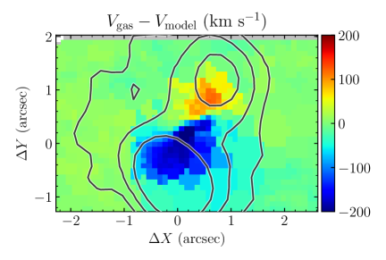
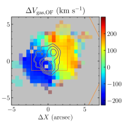
إذا كان هذا صحيحًا، فإن سرعة خط البصر النسبية بين المكون ”الرئيسي” و”التدفق الخارجي” توفر حدًا أدنى على ، نظرًا لأن هذه الكمية ليست حساسة للاختلافات في السرعة بين هذه المكونات في مستوى السماء. ونتيجة لذلك، فإننا نقدر للفص NW و للفص SE - وهو ما يكفي لتأين كميات كبيرة من المواد سواء ”في اتجاه المصب” (ما بعد الصدمة) أو ”في المنبع” (ما قبل الصدمة) من الصدمة (على سبيل المثال، Dopita and Sutherland 1995a; Dopita et al. 1996; Raymond 1976; Wilson and Raymond 1999). علاوة على ذلك، فإن الهندسة المرصودة، والاختلافات في المدى وسرعة الصدمة بين مكوني التدفق الخارجي، تتوافق مع تلك المتوقعة من التدفقات الخارجية الناتجة عن المواد عالية السرعة المقذوفة من نوى مجرية نشطة تتفاعل مع وسط بين نجمي متكتل (على سبيل المثال، Mukherjee et al. 2018; Nelson et al. 2019). في الواقع، تشير عمليات المحاكاة إلى أن الهندسة ثنائية المخروط لهذا التدفق الخارجي هي النتيجة الطبيعية لتدفق مركزي محصور بقرص مجرة (على سبيل المثال، Wagner et al. 2012). باختصار، يبدو أن المكون النسبي والمتأين لهذا التدفق الخارجي هو نتيجة للصدمات المدفوعة إلى ISM المحيطة بواسطة محرك مركزي.
4.1.3 مكون الغاز المتأين
في §4.1.1، قدمنا قياساتنا للطاقة الموجودة في المكون النسبي لهذا التدفق الخارجي. ومع ذلك، يتكون هذا التدفق أيضًا من عدة مكونات غير نسبية، بما في ذلك الغاز المتأين والغاز الذري والمواد الجزيئية. في هذا القسم، نستخدم أطياف خط الانبعاث المشتقة من MaNGA (§3.1.2) وGMOS (§3.2) لقياس خصائص مكونه المتأين. في حين تشير دراسات التدفقات الخارجية المماثلة في المجرات الأخرى إلى أن المواد الذرية والجزيئية قد تشكل الجزء الأكبر من الكتلة المحصورة (على سبيل المثال، Oosterloo et al. 2017)، فإن بيانات الرصد اللازمة لقياس خصائص هذه المكونات في هذه المجرة غير متوفرة حاليًا.
يمكن تقدير كتلة الغاز المتأين في هذا التدفق الخارجي ، على النحو التالي (على سبيل المثال، Soto et al. 2012; Baron et al. 2017):
| (13) |
حيث هي كتلة ذرة الهيدروجين، هو متوسط العدد الذري للمادة المنبعثة (يفترض أنها شمسية، مثل )، هو حجم المنطقة المنبعثة، هو عامل الملء، و هو الكثافة العددية للإلكترونات. إن سطوع H لهذه المنطقة يساوي (على سبيل المثال Baron et al. 2017):
| (14) |
حيث هي H انبعاثية البلازما المتأينة. في حالة المواد شديدة التأين ذات درجة حرارة الإلكترون K وسميكة بصريًا لانبعاث خط ليمان (“الحالة B”؛ على سبيل المثال Baker and Menzel 1938; Burgess 1958)، erg سم3 s-1 (Osterbrock and Ferland, 2006). ونتيجة لذلك، يمكننا حساب من خلال تقييم:
| (15) |
لذلك، لحساب هذه الكمية، نحتاج أولاً إلى تحديد في التدفق الخارجي بالإضافة إلى تصحيح انبعاث H المرصود من الانطفاء على طول خط البصر.
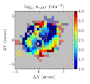
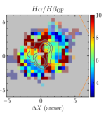
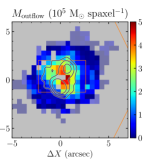
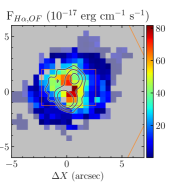
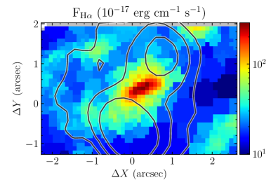
نقوم بتقدير باستخدام النسبة المرصودة لـ [S ii]6717/[S ii]6731 خطوط الانبعاث (Osterbrock and Ferland, 2006; Proxauf et al., 2014) بشكل منفصل لمكون ”التدفق الخارجي” لطيف خط انبعاث MaNGA وبيانات GMOS. كما هو موضح في الشكل 18 لـ MaNGA “التدفق الخارجي”، هناك اختلافات كبيرة في هذه المعلمة بين السباكسلات المتجاورة بسبب ضعف هذه الخطوط و/أو تعقيد تحلل الخط في العديد من السباكسلات. لذلك قمنا بحساب متوسط للتدفق الخارجي في كل مجموعة بيانات، مع وزن القيمة في كل سباكسل بإجمالي تدفق H+[N ii] لمكون التدفق الخارجي الخاص به. ينتج عن هذا متوسطًا مرجحًا قدره ( cm-3) في بيانات MaNGA و ( cm-3) في بيانات GMOS، على غرار القيمة المستنتجة للتدفقات الخارجية في المجرات الأخرى (على سبيل المثال، Harrison et al. 2014; Karouzos et al. 2016) وكذلك في التحليل السابق لهذه المجرة بواسطة Wylezalek et al. (2017) (الجدول 9). ومع ذلك، فإن هذه الطريقة لتقدير كثافة الإلكترون ترجع بشكل تفضيلي القيم (على سبيل المثال، Proxauf et al. 2014). ولذلك، فإن المناطق الوسطى من التدفق الخارجي حيث نقدر قد يكون لها كثافة حقيقية أقل من هذه القيمة. علاوة على ذلك، فإن التأين المنخفض للغاز المنبعث يشير إلى وجود مكون محايد كبير لهذه المادة، والتي لا يتم قياس كثافتها باستخدام هذه التقنية. ونتيجة لذلك، من المرجح أن تكون كثافة الغاز الإجمالية (المحايدة والمؤينة) أعلى بكثير من القيمة المقدرة لـ (على سبيل المثال، Dempsey and Zakamska 2018). أخيرًا، تشير النتائج الحديثة إلى أن كثافة الإلكترون المقدرة باستخدام [S ii] أقل بشكل منهجي من تلك التي تستخدم خطوط الانبعاث الأخرى (على سبيل المثال، Davies et al. 2020) لسوء الحظ لم يتم اكتشافها بدقة طيفية كافية أو إشارة إلى ضوضاء منخفضة في بياناتنا.
لتقدير الانطفاء على طول خط الرؤية تجاه المواد المتدفقة في كلتا مجموعتي البيانات، نستخدم نسبة بالمر (نسبة التدفق H/) لمكون التدفق الخارجي المقاس في بيانات MaNGA. وذلك لأنه، كما هو موضح في §3.2، لم يتم اكتشاف H في بيانات GMOS. كما هو موضح في الشكل 18، تختلف هذه الكمية بشكل كبير، وبالنسبة لتدفق MaNGA الخارجي، تم تصحيح تدفق H للتدفق الخارجي في كل سباكسل مع نسبة بالمر المقابل المقاس لهذا المكون. إن الدقة الزاوية المختلفة لبيانات MaNGA وGMOS تمنعنا من عمل سباكسل مماثل عن طريق تصحيح السباكسل. ونتيجة لذلك، فإننا نقدر متوسط الانطفاء نحو التدفق الخارجي في بيانات GMOS من بيانات MaNGA بطريقتين: القيمة المتوسطة، ، والقيمة المتوسطة المرجحة للتدفق H+[N ii] . في جميع الحالات، نستخدم نسبة بالمر لتصحيح التدفق H باستخدام قانون الانطفاء المشتق من Cardelli et al. (1989)، مع النتائج الموضحة في الشكل 19.
مع هذه القياسات لـ وتصحيح الانطفاء H في متناول اليد، أصبح من الممكن الآن قياس الكتلة الإجمالية للغاز المتأين المتدفق في هذه المجرة. بالنسبة لبيانات MaNGA، نقوم بذلك عن طريق جمع الكتلة المقدرة في كل سباكسل (الشكل 18)، واستخلاص كتلة إجمالية قدرها . بالنسبة لبيانات GMOS، نستخدم إجمالي التدفق H المُقاس في منطقة ”التدفق الخارجي” - والذي، كما هو موضح في §3.2، يتوافق مع تلك السباكسلات ذات ، أو كيلو فرسخ (الشكل 15) لهذه المجرة. في هذه الحالة، نقدر - في توافق جيد مع القيمة المشتقة من بيانات MaNGA وحدها.
علاوة على ذلك، يمكننا تقدير السرعة الإجمالية للتدفق الخارجي كـ (على سبيل المثال، Karouzos et al. 2016):
| (16) |
حيث تظهر قيمة هذه الكميات كما تم قياسها من بيانات GMOS في الشكل 15 وكما هو مشتق لمكون “التدفق الخارجي” في طيف خط انبعاث MaNGA موضح في الشكل 20. تعطي كلتا مجموعتي البيانات قيمًا مماثلة لـ ، حيث يتحرك الغاز المتأين بالقرب من km s-1 بالقرب من مركز المجرة ويتباطأ إلى قيم km s-1 بالقرب من حافة انبعاث الراديو.
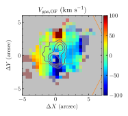
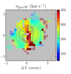
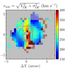
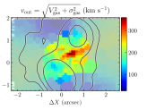
باستخدام معلومات السرعة هذه، يمكننا حساب الطاقة الحركية و”عمر” الغاز المتأين في هذا التدفق. نحدد الطاقة الحركية للغاز المتأين في بيانات MaNGA من خلال تقييم في كل سباكسل (الشكل 21)، ونجمع معًا القيم لقياس إجمالي في بيانات MaNGA و erg لبيانات GMOS. تقارن هذه الطاقات بالحد الأدنى من الطاقة المقدرة للمحتوى النسبي لهذا التدفق الخارجي (الجدول 8، §4.1.1)، مما يشير إلى أن هذين المكونين في حالة تقاسم طاقي تقريبي. علاوة على ذلك، فإننا نقدر عمر تدفق MaNGA في كل سباكسل على النحو التالي:
| (17) |
حيث هو الفصل المادي المتوقع بين السباكسل ومركز المجرة. كما هو موضح في الشكل 21، يشير هذا إلى أن عمر التدفق الخارجي هو مليون سنة. بالنسبة لبيانات GMOS، فإن مدى التدفق الخارجي كيلو فرسخ مقترنًا بقيمة متوسط سرعة التدفق الخارجي المرجح بتدفق H+[N ii] لـ 222 km s-1 تشير إلى مليون سنة - بما يتوافق مع النتائج المستمدة من بيانات MaNGA. كما هو موضح في الجدول 9، يشير هذا إلى معدل تدفق كتلي يبلغ وقدرة حركية تبلغ .
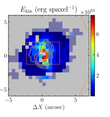
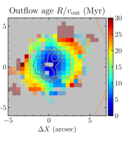
4.2 نواة المجرة النشطة
يشير الموقع المركزي وشكل هذا التدفق إلى أصل AGN. بينما أطياف خط الانبعاث التي رصدتها MaNGA (§3.1.2؛ الأشكال 13، 16 & 22) والتشتت عالي السرعة المقاس بواسطة GMOS (§3.2؛ الشكل 14) من الغاز المركزي كلها متوافقة مع نشاط AGN - وجودها لا يجعلها مسؤولة عن توليد هذا التدفق (على سبيل المثال، Shimizu et al. 2019) ولا يفسر كيف يؤدي التراكم على SMBH المركزي إلى صدمات (§4.1.2) المسؤولة عن إنشاء النسبية المرصودة (§4.1.1) ومكونات الغاز المتأين (§4.1.3).
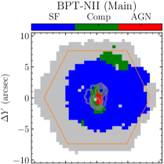
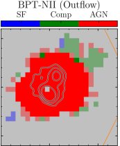
يتطلب تحديد ما إذا كانت النوى المجرية النشطة قادرة على تشغيل التدفق الخارجي المرصود أولاً تقدير اللمعان البولومتري للنواة المجرية النشطة . تفترض الأساليب الحالية التي تستخدم أطياف خط الانبعاث لـ AGN أن المواد المنبعثة يتم تأينها ضوئيًا عن طريق تراكم المواد على SMBH (على سبيل المثال، Heckman et al. 2004، Netzer 2009 والمراجع الموجودة فيها). كما ورد في §4.1.2، يُعتقد أن مكون ”التدفق الخارجي” لأطياف خط الانبعاث تهيمن عليه المواد الساخنة بالصدمة. لذلك، يجب أن يؤدي المكون ”الرئيسي” لطيف خط الانبعاث المرصود إلى تقدير أكثر دقة لـ .
إحدى التقنيات الأكثر شيوعًا لتحديد تستخدم اللمعان المصحح للانقراض للخط [O iii] (على سبيل المثال، Kauffmann and Heckman (2009)):
| (18) |
حيث استخدمنا نسب بالمر الملحوظة (الشكل 23) وقانون التوهين Cardelli et al. (1989) لحساب قيمة على طول خط البصر.
تم اشتقاق هذه العلاقة من خلال تحليل طيف SDSS للمناطق المركزية للخط الضيق عالي اللمعان AGN (Heckman et al., 2004)، ولم تحاول الفصل بين انبعاث [O iii] من المواد المؤينة ضوئيًا والمسخنة بالصدمة. إذا كانت التدفقات الخارجية واسعة النطاق نادرة في عينة AGN هذه، فإن تضمين انبعاث [O iii] من التدفق الخارجي في هذا الحساب من شأنه أن يبالغ بشكل كبير في تقدير القيمة الحقيقية لـ . ومع ذلك، نظرًا لعدم إجراء هذا التمييز، فإننا نشتق باستخدام كل من التدفق الإجمالي [O iii] والتدفق [O iii] المقاس في المكون ”الرئيسي” فقط.
علاوة على ذلك، كما هو موضح في الأشكال 16 & 22، فقط في المركزية لهذه المجرة هي نسب الخطوط للمجرة. المكون ”الرئيسي” متوافق مع التأين الضوئي بواسطة AGN. وهذا أصغر من فتحة المستخدمة لاشتقاق المعادلة 18 (Heckman et al., 2004). ولتقدير التأثير المحتمل الناتج عن هذا التناقض، قمنا بقياس التدفق [O iii] في كلا المنطقتين. قيم و الناتجة عن الاختيارات المختلفة في المنطقة والمكونات موضحة في الجدول 10.
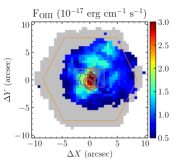
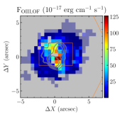
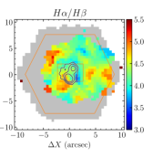
| Parameter | AGN region | 3″ |
|---|---|---|
| Kauffmann and Heckman (2009) for main component | ||
| , mag | 1.22 | 1.25 |
| , erg s-1 | ||
| , erg s-1 | ||
| , % | ||
| Kauffmann and Heckman (2009) for total flux | ||
| , mag | 1.99 | 2.01 |
| , erg s-1 | ||
| , erg s-1 | ||
| , % | ||
| Netzer (2009) + extinction law | ||
| , erg s-1 | ||
| , % | 0.314 | 0.937 |
| Netzer (2009) + MW extinction law CCM89 | ||
| , erg s-1 | ||
| , % | 0.277 | 0.810 |
علاوة على ذلك، فإن العلاقة الفيزيائية بين اللمعان البولومتري للنواة المجرية النشطة وطيف خط الانبعاث للغاز المتأين تعتمد على الطيف الناتج عن المادة المتراكمة على SMBH (على سبيل المثال، Netzer 2009 والمراجع الموجودة فيه). يشير التنوع الكبير في توزيع الطاقة الطيفية المرصودة (SED) لـ AGN (على سبيل المثال، Elvis et al. 1994) إلى أن العلاقات المختلفة مناسبة لأنواع مختلفة من AGN. تقع نسب الخطوط للمكون ”الرئيسي” في المناطق الوسطى بشكل أساسي ضمن منطقة LIER من مخطط BPT [S ii] (الشكل 16). نظرًا لأن المكون ”الرئيسي” يستثني في المقام الأول المواد التي يتم تسخينها بالصدمات، فمن المحتمل أن يكون هذا الانبعاث ناتجًا عن المواد المتأينة ضوئيًا بواسطة قرص تراكم AGN. ومع ذلك، تم استبعاد LIER AGN بشكل فعال من عينة Heckman et al. (2004) المستخدمة لاشتقاق علاقة الواردة في المعادلة 18 (Kauffmann and Heckman, 2009). ونتيجة لذلك، نقوم أيضًا بتقدير باستخدام علاقة تتضمن لمعان المادة المتأينة ضوئيًا بواسطة AGN والتي يُقال إنها أقل حساسية لـ SED الخاص بقرص التراكم وبالتالي أكثر ملاءمة لـ LI(N)ER AGN (المعادلة 1 في Netzer 2009):
| (19) |
حيث يعتمد على قانون الانطفاء. لمراعاة الاختلافات المحتملة في خصائص الغبار على طول خط الرؤية، نكرر هذا التحليل باستخدام نفس قانونين الانطفاء اللذين ناقشهما Netzer (2009): قانون العمق البصري المشتق في الأصل لمجرات الانفجار النجمي (على سبيل المثال، Wild et al. 2007؛ )، وقانون الانطفاء Cardelli et al. (1989) للمجرات من نوع درب التبانة (). مرة أخرى، نستخدم نفس المنطقتين المكانيتين المستخدمتين في الطريقة السابقة. كما هو موضح في الجدول 10، فإن قيم المشتقة باستخدام هذه الطريقة قابلة للمقارنة مع تلك المشتقة باستخدام .
لتحديد ما إذا كان هذا AGN يمكن أن يمد التدفق الخارجي بالطاقة الملحوظ في MaNGA 1-166919، قمنا بمقارنة خصائصه مع خصائص التدفق الخارجي المدفوع ””المعروف”” لـ AGN. على سبيل المثال، وجد Kang and Woo (2018) أن:
| (20) |
حيث و هما، على التوالي، نصف القطر و [O iii] للتدفق الخارجي. نطاق المحدد في الجدول 10 يقترح – في توافق جيد جدًا مع حجم فصوص الراديو المكتشفة في صور الراديو عريضة النطاق (الجدول 4؛ الشكل 3) بالإضافة إلى منطقة العالية المستنتجة من أطياف خط انبعاث GMOS (الشكل 15)، والتي تقترح . وجدت دراسات إضافية أن معدل التدفق الكتلي لتدفق الغاز المتأين يرتبط باللمعان البولومتري لـ AGN (على سبيل المثال، Fiore et al. 2017; Baron and Netzer 2019، Deconto-Machado et al. قيد الإعداد). كما هو موضح في الشكل 24، فإن معدل التدفق الكتلي الخارجي الذي نقدره لهذه المجرة أعلى بكثير من الجزء الأكبر من المجرات ذات اللمعان البولومتري للنواة المجرية النشطة المماثل. وقد لوحظت نتائج مماثلة بالنسبة للقوة الحركية لهذا التدفق الخارجي، والتي تكون مرة أخرى أعلى من AGN الأخرى ذات المماثلة
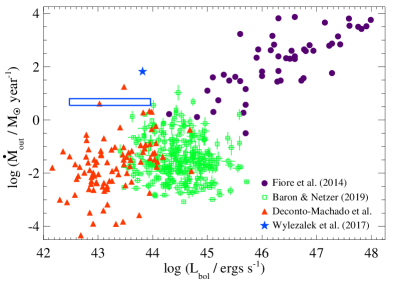
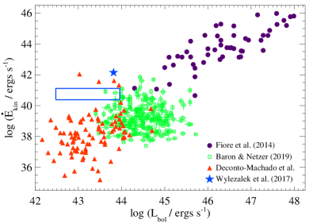
يشير ذلك إلى أن نشاط AGN في MaNGA 1166919 يولد تدفقًا خارجيًا بآلية تختلف عما هو في معظم النوى المجرية النشطة ذات اللمعان البولومتري المماثل. إذا كان توليد التدفق الخارجي مرتبطًا ماديًا بتراكم المواد على SMBH، فإن وضع التراكم في 1166919 يختلف عن الآخرين. المعلمة الرئيسية المميزة بين تراكم الوضع ”الإشعاعي” و”النفاث” على SMBH (كما تمت مناقشته في §1) هي نسبة إدنجتون ، والتي تم تعريفها على أنها:
| (21) |
حيث هو ضياء إدنجتون لـ SMBH المركزي (على سبيل المثال، Rybicki and Lightman 1986; Heckman and Best 2014 والمراجع الواردة فيه):
| (22) |
حيث هي كتلة SMBH.
لتقدير ، نستخدم الارتباط الملحوظ بين هذه الكمية وتشتت السرعة النجمية للانتفاخ المركزي للمجرة المضيفة (انظر المراجعة الأخيرة بواسطة Kormendy and Ho 2013). يشير تحليل سطوع سطح هذه المجرة إلى انتفاخ ومكون قرصي إلى أن انتفاخها له نصف قطر فعال ، وإهليلجية ، وزاوية موضعية. PA (الجدول 2 في Simard et al. 2011). نقوم بعد ذلك بتقدير تشتت السرعة النجمية المركزية عن طريق حساب المتوسط المرجح للضوء لـ (كلاهما موضح في الشكل 8) ضمن بافتراض الشكل الهندسي أعلاه - العائد كيلومتر في الثانية-1. العلاقة المشتقة من van den Bosch (2016):
| (23) |
العائد ، الذي يتمتع بضياء إدنجتون (المعادلة 22):
| (24) |
بالنسبة لنطاق المحسوب أعلاه (الجدول 10)، فإن هذا يعني – مما يشير إلى تراكم ””وضع النفاث”” على SMBH (على سبيل المثال Best and Heckman 2012). يشير العمل النظري الحديث إلى أنه بالنسبة إلى لمعان AGN معين، يؤدي تراكم ”الوضع النفاث” إلى تدفق خارجي أكثر ضخامة وحيوية من تراكم ”الوضع الإشعاعي” (على سبيل المثال، Cielo et al. 2018)، بما يتوافق مع المقارنة الموضحة أعلاه (الشكل 24).
يُعتقد أن أوضاع تراكم AGN المختلفة تحدث في نوى راديوية نشطة مختلفة والمجرات المضيفة (على سبيل المثال، Heckman and Best 2014; Smolcic 2016 والمراجع الموجودة فيها)، مع تراكم الوضع الإشعاعي المرتبط عادةً بـ AGN الراديوي عالي الإثارة (HERAGN) بينما يُعتقد أن تراكم ”الوضع النفاث” يحدث في AGN راديوية منخفض الإثارة (LERAGN). كما هو موضح في الجدول 11، فإن اللمعان الراديوي لهذه النواة المجرية النشطة يتوافق مع LERAGN (على الرغم من وجود HERAGN راديوي هادئ؛ على سبيل المثال، Best and Heckman 2012) ولكن خصائص المجرة المضيفة - وخاصة لونها - تذكرنا بـ HERAGN. يشير ذلك إلى أن نشاط AGN في MaNGA 1-166919 يقود حاليًا انتقال المجرة المضيفة من خصائص شبيهة بـ HERAGN إلى خصائص شبيهة بـ LERAGN. يتطلب هذا فهم كيفية تأثير النوى المجرية النشطة على ISM المحيطة، وهو ما نناقشه في §4.3.
4.3 تفاعل التدفق الخارجي مع المجرة المضيفة
إن ظهور هذا التدفق الخارجي على مقاييس الكيلو فرسخية التي تم فحصها من خلال الملاحظات الموضحة في §2 و§3 أقل اعتمادًا على شكله الهندسي الأولي ومحتواه وأكثر حساسية لبنية الوسط بين النجمي المحيط (على سبيل المثال، Wagner et al. 2012, 2013, 2016) والاتجاه النسبي للتدفق إلى القرص المجري. الإزاحة بين المحور المركزي للتدفق الخارجي (كما هو محدد بواسطة مورفولوجيته الراديوية) والمحور القطبي لقرص الغاز الذي يدور بانتظام (الشكل LABEL:fig:main_rot) يشير إلى ميل كبير بين الاثنين - من المتوقع أن يزيد من تأثير التدفق في الوسط بين النجمي المحيط (على سبيل المثال، Cielo et al. 2018; Mukherjee et al. 2018; Murthy et al. 2019). من المتوقع أن يؤدي هذا التفاعل إلى منع تشكل النجوم («التغذية الراجعة السلبية») في بعض المناطق وتعزيز تشكل النجوم («التغذية الراجعة الإيجابية») في الأجزاء الأخرى من المجرة المضيفة (على سبيل المثال، Wegner et al. 2015; Dugan et al. 2017; Cielo et al. 2018; Mukherjee et al. 2018).
لفهم كيفية تأثير هذا التدفق على المجرة المضيفة، نحتاج إلى قياس كمية وتوزيع عملية تشكل النجوم. من الأفضل القيام بذلك باستخدام أدوات التتبع لمعدل تشكل النجوم (SFR)، مثل لمعان H و1.4 جيجاهرتز (على سبيل المثال، Kennicutt 1998; Kennicutt Jr and Evans II 2012 والمراجع الموجودة فيه). كما هو موضح في الشكل 3، تم اكتشاف القليل من انبعاث 1.4 جيجاهرتز خارج منطقة التدفق الخارجي. ولذلك، يمكننا استخدام عدم الكشف عن انبعاث 1.4 جيجاهرتز لتحديد الحد الأعلى لـ SFR. يُعتقد أن التحويل بين 1.4 جيجاهرتز وSFR (على سبيل المثال، Murphy et al. 2011; Kennicutt Jr and Evans II 2012):
| (25) |
بالنسبة لحجم الشعاع وقيمة جذر متوسط مربع الصورة 1.4 جيجاهرتز (الجدول 3)، فإن اكتشاف للانبعاث الراديوي المنتشر في هذه المجرة يتوافق مع الحد الأعلى لكثافة سطح معدل تشكل النجوم . المقياس الأكثر حساسية لـ هو انبعاث H للمكون ”الرئيسي” إلى الغاز المتأين في هذه المجرة. نقوم أولاً بتصحيح تدفق H المرصود من الانطفاء باستخدام طريقة لكل سباكسل على حدة الموضحة في §4.1.3 & 4.2 لنسب بالمر المبينة في الشكل 23. لتحويل لمعان H المصحح للانقراض لكل سباكسل إلى SFR، نستخدم العلاقة (على سبيل المثال، Hao et al. 2011; Murphy et al. 2011; Kennicutt Jr and Evans II 2012):
| (26) |
نقوم بعد ذلك بتقسيم SFR على المساحة المتوقعة لكل سباكسل لحساب SFR.
كما هو موضح في الشكل 25، تقع المناطق ذات أعلى معدل لتشكل النجوم بالقرب من حافة التدفق الخارجي. تمت ملاحظة تشكل نجمي معزز بالقرب من حدود التدفق الخارجي في عمليات المحاكاة العددية لمثل هذه الأنظمة، والتي تتركز عادة على طول المحور النفاث و/أو ”حلقة” حول التدفق الخارجي (على سبيل المثال، Dugan et al. 2017; Mukherjee et al. 2018) - على غرار ما لوحظ هنا (الشكل 25). المنطقة ذات معدل SFR العالي غرب مركز المجرة تتزامن مع انبعاث الموجود في صورة 6.0 جيجاهرتز (النطاق C) لهذا المصدر (الشكل 25). يشير الطيف الراديوي المسطح (; §2.2، الشكل 6) المكتشف في هذه المنطقة إلى وجود إشعاع الفرملة الحراري من منطقة H ii، بما يتوافق مع SF الكبير المكتشف في هذه المنطقة. توجد منطقة ذات انبعاث منخفض H (الشكل 25) ونسبة بالمر منخفض (الشكل 23) تقع خارج حدود W للتدفق الخارجي مباشرةً. كما هو مذكور في §4.1.2، يمكن للفوتونات والجسيمات عالية الطاقة المنتجة ”في اتجاه مجرى الصدمة” أن تسخن وتؤين مادة ما قبل الصدمة - مما قد يؤدي إلى تدمير جزيئات الغبار (تقليل نسبة بالمر) وتأين الوسط المحيط بالكامل (مما يؤدي إلى انخفاض H اللمعان إذا كان الغاز ساخنًا جدًا بحيث لا يمكن إعادة تجميعه).
لتقييم التأثير العالمي لهذا التدفق الخارجي على تشكل النجوم في المجرة المضيفة، قمنا بمقارنة إجمالي معدل تشكل النجوم فيها والذي يبلغ M - بما يتوافق مع M مشتق من تحليل مستقل لتوزيع الطاقة الطيفية (SED) (كتالوج GSWLC-2؛ Salim et al. 2018). بالنسبة للمجرات المكونة للنجوم، يُعتقد أن SFR يعتمد بشدة على الكتلة النجمية للمجرة ، مع تحليل للمجرات المكونة للنجوم التي لاحظها SDSS مما يشير إلى ما يلي (على سبيل المثال، Elbaz et al. 2007 والمراجع الواردة فيه):
| (27) |
بالنسبة إلى من MaNGA 1-166919، تشير هذه العلاقة إلى - النطاق الأدنى الذي يتوافق مع القيمة المشتقة أعلاه. يشير هذا إلى أن نشاط النشاط الراديوي الهادئ للنواة المجرية النشطة في مركز هذه المجرة لم يثبط (بعد) تشكل النجوم، كما لوحظ في مجرات أخرى مماثلة (على سبيل المثال، Comerford et al. 2020)، وموقع هذه المجرة في ”الوادي الأخضر” في مخطط اللون-القدر يرجع جزئيًا إلى الانطفاء.
5 الملخص والاستنتاجات
في هذا البحث، نقدم تحليلًا تفصيليًا للخصائص الراديوية (§2) والبصرية (§3) لـ MaNGA 1-166919 لتحديد أصل ومحتوى وتأثير التدفق الخارجي على مقاييس الكيلو فرسخية. تتيح لنا هذه البيانات معًا قياس خصائص النوى المجرية النشطة المركزية (§4.2)، وحركيات هذا التدفق الخارجي (§4.1.2)، وطاقيات مكونه النسبي (§4.1.1) ومكونات الغاز المتأين (§4.1.3)، بالإضافة إلى تأثيرها على المجرة المضيفة لها. هناك حاجة إلى مثل هذه المعلومات لتطوير نموذج كامل لكيفية تأثير النوى المجرية النشطة على المجرة المضيفة لها.
كما هو موضح في الشكل 26، تشير نتائجنا إلى أن مركز هذه المجرة يستضيف نواة مجرية نشطة منخفضة اللمعان مدعومًا بتراكم منخفض المستوى () على الثقب الأسود فائق الكتلة في مركزها. (§4.2). تعمل المادة المقذوفة أثناء هذا التراكم على دفع الصدمات ”ثنائية المخروط” (§4.1.2) إلى الوسط المحيط المسؤول عن إنتاج الإلكترونات النسبية المرصودة (§2.2) والغاز المتأين (§4.1.2)، والتي لها طاقات متشابهة (; الجداول 8 & 9). علاوة على ذلك، لوحظ أن القوة الحركية ومعدل التدفق الخارجي للغاز المتأين أعلى من مثيلهما في AGN الأخرى ذات (الشكل 24)، مما يشير إلى أن تراكم إدنجتون المنخفض قد يكون أكثر كفاءة في إنتاج التدفقات الخارجية من نظائرها ذات نسب إدنجتون العالية. أخيرًا، اكتشفنا مناطق تشكل النجوم المعزز ومنخفض حول التدفق الخارجي (الشكل 25)، مما يشير إلى أن ذلك يؤدي إلى ردود فعل ”إيجابية” و”سلبية” في المضيف. ومع ذلك، فإن معدل تشكل النجوم الكلي حاليًا لهذه المجرة يتوافق مع SFR للمجرات التي تشكل النجوم ذات الكتل النجمية المماثلة (§4.3) - على الرغم من أن الحجم الصغير نسبيًا والعمر الصغير () للتدفق الخارجي يشير إلى ذلك قد يؤثر في المستقبل بشكل أعمق على تشكل النجوم في مضيفه.
مثل هذه الصورة الكاملة للتفاعل بوساطة التدفق الخارجي بين AGN والمناطق المحيطة بها في MaNGA 1-166919 لا يمكن تحقيقها إلا من خلال تحليل البيانات متعددة الأطوال الموجية والتي تم حلها مكانيًا. أصبح هذا ممكنًا الآن بالنسبة لعينات كبيرة من مجرات التدفق الخارجي، وستسمح التحليلات المشابهة بتحديد كيفية ارتباط خصائص وتأثير هذه التدفقات الخارجية بخصائص النوى المجرية النشطة المركزية، والمجرة المضيفة، وعمر الأنظمة - وهو أمر بالغ الأهمية لتطوير نموذج كامل للدور الذي تلعبه التدفقات الخارجية في تطور المجرات.
References
- The Fifteenth Data Release of the Sloan Digital Sky Surveys: First Release of MaNGA-derived Quantities, Data Visualization Tools, and Stellar Library. ApJS 240 (2), pp. 23. External Links: Document, 1812.02759 Cited by: §3.1.
- Sensitive radio survey of obscured quasar candidates. MNRAS 463 (3), pp. 3056–3073. External Links: Document, 1603.07325 Cited by: §1.
- The MAPPINGS III Library of Fast Radiative Shock Models. ApJS 178 (1), pp. 20–55. External Links: Document, 0805.0204 Cited by: §4.1.2, §4.1.2.
- Integral Field Spectroscopy with the Gemini Multiobject Spectrograph. I. Design, Construction, and Testing. PASP 114 (798), pp. 892–912. External Links: Document Cited by: §3.
- The Astropy Project: Building an Open-science Project and Status of the v2.0 Core Package. AJ 156 (3), pp. 123. External Links: Document, 1801.02634 Cited by: تأثير النوى المجرية النشطة منخفضة اللمعان في مجراتها المضيفة: دراسة راديوية وبصرية للتدفق الخارجي على مقاييس الكيلو فرسخية في MaNGA 1166919.
- Astropy: A community Python package for astronomy. A&A 558, pp. A33. External Links: Document, 1307.6212 Cited by: تأثير النوى المجرية النشطة منخفضة اللمعان في مجراتها المضيفة: دراسة راديوية وبصرية للتدفق الخارجي على مقاييس الكيلو فرسخية في MaNGA 1166919.
- The Limited Impact of Outflows: Integral-field Spectroscopy of 20 Local AGNs. ApJ 837 (1), pp. 91. External Links: Document, 1702.01900 Cited by: §1.
- The Prevalence of Gas Outflows in Type 2 AGNs. II. 3D Biconical Outflow Models. ApJ 828 (2), pp. 97. External Links: Document, 1606.05348 Cited by: §3.1.2.
- Physical Processes in Gaseous Nebulae. III. The Balmer Decrement.. ApJ 88, pp. 52. External Links: Document Cited by: §4.1.3.
- Classification parameters for the emission-line spectra of extragalactic objects.. PASP 93, pp. 5–19. External Links: Document Cited by: §3.1.2, §3.1.2.
- Evidence of ongoing AGN-driven feedback in a quiescent post-starburst E+A galaxy. MNRAS 470 (2), pp. 1687–1702. External Links: Document, 1705.03891 Cited by: §4.1.3.
- Discovering AGN-driven winds through their infrared emission - II. Mass outflow rate and energetics. MNRAS 486 (3), pp. 4290–4303. External Links: Document, 1903.11076 Cited by: §4.2.
- SDSS IV MaNGA - spatially resolved diagnostic diagrams: a proof that many galaxies are LIERs. MNRAS 461 (3), pp. 3111–3134. External Links: Document, 1605.07189 Cited by: §4.1.2.
- The Data Analysis Pipeline for the SDSS-IV MaNGA IFU Galaxy Survey: Emission-line Modeling. AJ 158 (4), pp. 160. External Links: Document, 1901.00866 Cited by: §3.1.
- The acceleration of cosmic rays in shock fronts - I.. MNRAS 182, pp. 147–156. External Links: Document Cited by: §4.1.1.
- The acceleration of cosmic rays in shock fronts - II.. MNRAS 182, pp. 443–455. External Links: Document Cited by: §4.1.1.
- A Simple Model of Nonlinear Diffusive Shock Acceleration. ApJ 526 (1), pp. 385–399. External Links: Document Cited by: §4.1.1.
- On the fundamental dichotomy in the local radio-AGN population: accretion, evolution and host galaxy properties. MNRAS 421 (2), pp. 1569–1582. External Links: Document, 1201.2397 Cited by: §4.2, §4.2, Table 11.
- Particle acceleration by astrophysical shocks.. ApJ 221, pp. L29–L32. External Links: Document Cited by: §4.1.1.
- Sloan Digital Sky Survey IV: Mapping the Milky Way, Nearby Galaxies, and the Distant Universe. AJ 154 (1), pp. 28. External Links: Document, 1703.00052 Cited by: §3.
- Overview of the SDSS-IV MaNGA Survey: Mapping nearby Galaxies at Apache Point Observatory. ApJ 798 (1), pp. 7. External Links: Document, 1412.1482 Cited by: §3.
- The hydrogen recombination spectrum. MNRAS 118, pp. 477. External Links: Document Cited by: §4.1.3.
- Adaptive spatial binning of integral-field spectroscopic data using Voronoi tessellations. MNRAS 342, pp. 345–354. External Links: Document, astro-ph/0302262 Cited by: §3.1.1, §3.1.2, §3.2.
- Simulations of Ion Acceleration at Non-relativistic Shocks. I. Acceleration Efficiency. ApJ 783 (2), pp. 91. External Links: Document, 1310.2943 Cited by: §4.1.2.
- Simulations and Theory of Ion Injection at Non-relativistic Collisionless Shocks. ApJ 798 (2), pp. L28. External Links: Document, 1409.8291 Cited by: §4.1.2.
- The Relationship between Infrared, Optical, and Ultraviolet Extinction. ApJ 345, pp. 245. External Links: Document Cited by: §4.1.3, §4.2, §4.2.
- Dependence of Optical Active Galactic Nuclei Identification on Stellar Population Models. ApJ 861 (1), pp. 67. External Links: Document, 1805.12373 Cited by: §3.1.1.
- Marvin: A Tool Kit for Streamlined Access and Visualization of the SDSS-IV MaNGA Data Set. AJ 158 (2), pp. 74. External Links: Document, 1812.03833 Cited by: Table 1, §3.1.
- NBursts: Simultaneous Extraction of Internal Kinematics and Parametrized SFH from Integrated Light Spectra. In Stellar Populations as Building Blocks of Galaxies, A. Vazdekis and R. Peletier (Eds.), IAU Symposium, Vol. 241, pp. 175–176. External Links: 0709.3047, Document Cited by: Figure 8, §3.1.1.
- Kinematics and stellar populations of the dwarf elliptical galaxy IC 3653. MNRAS 376, pp. 1033–1046. External Links: astro-ph/0701842, Document Cited by: §3.1.1.
- RCSED—A Value-added Reference Catalog of Spectral Energy Distributions of 800,299 Galaxies in 11 Ultraviolet, Optical, and Near-infrared Bands: Morphologies, Colors, Ionized Gas, and Stellar Population Properties. ApJS 228 (2), pp. 14. External Links: Document, 1612.02047 Cited by: Figure 2.
- A comprehensive classification of galaxies in the Sloan Digital Sky Survey: how to tell true from fake AGN?. MNRAS 413 (3), pp. 1687–1699. External Links: Document, 1012.4426 Cited by: Figure 14.
- AGN feedback compared: jets versus radiation. MNRAS 477 (1), pp. 1336–1355. External Links: Document, 1712.03955 Cited by: §4.2, §4.3.
- A Catalog of 406 AGNs in MaNGA: A Connection between Radio-mode AGN and Star Formation Quenching. arXiv e-prints, pp. arXiv:2008.11210. External Links: 2008.11210 Cited by: §4.3.
- Essential Radio Astronomy. Cited by: §4.1.1, §4.1.1.
- Multiscale CLEAN Deconvolution of Radio Synthesis Images. IEEE Journal of Selected Topics in Signal Processing 2 (5), pp. 793–801. External Links: Document Cited by: §2.2.1.
- Ionized outflows in local luminous AGN: what are the real densities and outflow rates?. MNRAS 498 (3), pp. 4150–4177. External Links: Document, 2003.06153 Cited by: §4.1.3.
- The size-luminosity relationship of quasar narrow-line regions. MNRAS 477 (4), pp. 4615–4626. External Links: Document, 1804.05848 Cited by: §4.1.3.
- Overview of the DESI Legacy Imaging Surveys. AJ 157 (5), pp. 168. External Links: Document, 1804.08657 Cited by: Figure 1.
- Deep Very Large Array Observations of the Merging Cluster CIZA J2242.8+5301: Continuum and Spectral Imaging. ApJ 865 (1), pp. 24. External Links: Document, 1808.02447 Cited by: §4.1.1.
- Shock Excitation of LINERs. In The Physics of Liners in View of Recent Observations, M. Eracleous, A. Koratkar, C. Leitherer, and L. Ho (Eds.), Astronomical Society of the Pacific Conference Series, Vol. 103, pp. 44. Cited by: §4.1.2.
- Spectral Signatures of Fast Shocks. II. Optical Diagnostic Diagrams. ApJ 455, pp. 468. External Links: Document Cited by: §4.1.2.
- Spectral Signatures of Fast Shocks. II. Optical Diagnostic Diagrams. ApJ 455, pp. 468. External Links: Document Cited by: §4.1.2.
- The MaNGA Integral Field Unit Fiber Feed System for the Sloan 2.5 m Telescope. AJ 149 (2), pp. 77. External Links: Document, 1412.1535 Cited by: §3.1.
- Feedback by AGN Jets and Wide-angle Winds on a Galactic Scale. ApJ 844 (1), pp. 37. External Links: Document, 1608.01370 Cited by: §4.3, §4.3.
- The reversal of the star formation-density relation in the distant universe. A&A 468 (1), pp. 33–48. External Links: Document, astro-ph/0703653 Cited by: §4.3.
- Atlas of Quasar Energy Distributions. ApJS 95, pp. 1. External Links: Document Cited by: §4.2.
- The physics of galactic winds driven by active galactic nuclei. MNRAS 425 (1), pp. 605–622. External Links: Document, 1204.2547 Cited by: §1, §4.1.2.
- Galactic Magnetic Fields and the Origin of Cosmic Radiation.. ApJ 119, pp. 1. External Links: Document Cited by: §4.1.1.
- On the Origin of the Cosmic Radiation. Physical Review 75 (8), pp. 1169–1174. External Links: Document Cited by: §4.1.1.
- AGN wind scaling relations and the co-evolution of black holes and galaxies. A&A 601, pp. A143. External Links: Document, 1702.04507 Cited by: §4.2.
- Non-thermal Electron Acceleration in Low Mach Number Collisionless Shocks. I. Particle Energy Spectra and Acceleration Mechanism. ApJ 794 (2), pp. 153. External Links: Document, 1406.5190 Cited by: §4.1.1, §4.1.1.
- Quantifying the thermal Sunyaev-Zel’dovich effect and excess millimetre emission in quasar environments. MNRAS 490 (2), pp. 2315–2335. External Links: Document, 1907.11731 Cited by: §1.
- Dust-corrected Star Formation Rates of Galaxies. II. Combinations of Ultraviolet and Infrared Tracers. ApJ 741 (2), pp. 124. External Links: Document, 1108.2837 Cited by: §4.3.
- Kiloparsec-scale outflows are prevalent among luminous AGN: outflows and feedback in the context of the overall AGN population. MNRAS 441 (4), pp. 3306–3347. External Links: Document, 1403.3086 Cited by: §4.1.3.
- Emission-line profiles and kinematics of the narrow-line region in Seyfert and radio galaxies.. ApJ 247, pp. 403–418. External Links: Document Cited by: §4.1.2.
- An optical and radio survey of the nuclei of bright galaxies. Activity in normal galactic nuclei.. A&A 500, pp. 187–199. Cited by: §4.1.2.
- The Coevolution of Galaxies and Supermassive Black Holes: Insights from Surveys of the Contemporary Universe. ARA&A 52, pp. 589–660. External Links: Document, 1403.4620 Cited by: §1, §4.2, §4.2.
- Present-Day Growth of Black Holes and Bulges: The Sloan Digital Sky Survey Perspective. ApJ 613 (1), pp. 109–118. External Links: Document, astro-ph/0406218 Cited by: §4.2, §4.2, §4.2, §4.2.
- The Gemini-North Multi-Object Spectrograph: Performance in Imaging, Long-Slit, and Multi-Object Spectroscopic Modes. PASP 116 (819), pp. 425–440. External Links: Document Cited by: §3.
- But what about…: cosmic rays, magnetic fields, conduction, and viscosity in galaxy formation. MNRAS 492 (3), pp. 3465–3498. External Links: Document, 1905.04321 Cited by: §1, §4.1.1.
- Cosmic-Ray Driven Outflows to Mpc Scales from Galaxies. arXiv e-prints, pp. arXiv:2002.02462. External Links: 2002.02462 Cited by: §1.
- Winds as the origin of radio emission in z = 2.5 radio-quiet extremely red quasars. MNRAS 477 (1), pp. 830–844. External Links: Document, 1803.02821 Cited by: §1.
- Fermi-LAT Observations of Supernova Remnant G5.7-0.1, Believed to be Interacting with Molecular Clouds. ApJ 816 (2), pp. 63. External Links: Document, 1508.05426 Cited by: §4.1.1.
- Unraveling the Complex Structure of AGN-driven Outflows. III. The Outflow Size-Luminosity Relation. ApJ 864 (2), pp. 124. External Links: Document, 1807.08356 Cited by: §4.2.
- Unravelling the Complex Structure of AGN-driven Outflows. II. Photoionization and Energetics. ApJ 833 (2), pp. 171. External Links: Document, 1609.04076 Cited by: §4.1.3, §4.1.3.
- The host galaxies of active galactic nuclei. MNRAS 346 (4), pp. 1055–1077. External Links: Document, astro-ph/0304239 Cited by: Figure 13.
- Feast and Famine: regulation of black hole growth in low-redshift galaxies. MNRAS 397 (1), pp. 135–147. External Links: Document, 0812.1224 Cited by: §4.2, §4.2, Table 10.
- Star Formation in the Milky Way and Nearby Galaxies. Astrophysics of Galaxies. Cited by: §4.3.
- The Global Schmidt Law in Star-forming Galaxies. ApJ 498 (2), pp. 541–552. External Links: Document, astro-ph/9712213 Cited by: §4.3.
- Theoretical Modeling of Starburst Galaxies. ApJ 556 (1), pp. 121–140. External Links: Document, astro-ph/0106324 Cited by: Figure 13.
- The host galaxies and classification of active galactic nuclei. MNRAS 372 (3), pp. 961–976. External Links: Document, astro-ph/0605681 Cited by: Figure 13, Figure 16, §4.1.2.
- Powerful Outflows and Feedback from Active Galactic Nuclei. ARA&A 53, pp. 115–154. External Links: Document, 1503.05206 Cited by: §1.
- Accretion states and radio loudness in active galactic nuclei: analogies with X-ray binaries. MNRAS 372 (3), pp. 1366–1378. External Links: Document, astro-ph/0608628 Cited by: §1.
- Coevolution (Or Not) of Supermassive Black Holes and Host Galaxies. ARA&A 51 (1), pp. 511–653. External Links: Document, 1304.7762 Cited by: §1, §4.2.
- The Data Reduction Pipeline for the SDSS-IV MaNGA IFU Galaxy Survey. AJ 152 (4), pp. 83. External Links: Document, 1607.08619 Cited by: §3.1.
- Observing Strategy for the SDSS-IV/MaNGA IFU Galaxy Survey. AJ 150 (1), pp. 19. External Links: Document, 1505.04285 Cited by: §3.1.
- Evolutionary synthesis of galaxies at high spectral resolution with the code pegase-hr. metallicity and age tracers. A&A 425, pp. 881–897. External Links: arXiv:astro-ph/0408419 Cited by: Figure 8, §3.1.1.
- Information criteria for astrophysical model selection. MNRAS 377 (1), pp. L74–L78. External Links: Document, astro-ph/0701113 Cited by: §3.1.2.
- Galaxy Zoo: morphologies derived from visual inspection of galaxies from the Sloan Digital Sky Survey. MNRAS 389 (3), pp. 1179–1189. External Links: Document, 0804.4483 Cited by: §3.1.1.
- Galaxy Zoo 1: data release of morphological classifications for nearly 900 000 galaxies. MNRAS 410 (1), pp. 166–178. External Links: Document, 1007.3265 Cited by: §3.1.1.
- Galactic Disk Winds Driven by Cosmic Ray Pressure. ApJ 854 (2), pp. 89. External Links: Document, 1801.06544 Cited by: §1, §4.1.1.
- CASA Architecture and Applications. In Astronomical Data Analysis Software and Systems XVI, R. A. Shaw, F. Hill, and D. J. Bell (Eds.), Astronomical Society of the Pacific Conference Series, Vol. 376, pp. 127. Cited by: تأثير النوى المجرية النشطة منخفضة اللمعان في مجراتها المضيفة: دراسة راديوية وبصرية للتدفق الخارجي على مقاييس الكيلو فرسخية في MaNGA 1166919, §2.
- Relativistic jet feedback - III. Feedback on gas discs. MNRAS 479 (4), pp. 5544–5566. External Links: Document, 1803.08305 Cited by: §4.1.2, §4.3, §4.3.
- Calibrating Extinction-free Star Formation Rate Diagnostics with 33 GHz Free-free Emission in NGC 6946. ApJ 737 (2), pp. 67. External Links: Document, 1105.4877 Cited by: §4.3.
- Feedback from low-luminosity radio galaxies: B2 0258+35. A&A 629, pp. A58. External Links: Document, 1908.00374 Cited by: §1, §4.3.
- First results from the TNG50 simulation: galactic outflows driven by supernovae and black hole feedback. MNRAS 490 (3), pp. 3234–3261. External Links: Document, 1902.05554 Cited by: §1, §4.1.2.
- Accretion and star formation rates in low-redshift type II active galactic nuclei. MNRAS 399 (4), pp. 1907–1920. External Links: Document, 0907.3575 Cited by: §4.2, §4.2, Table 10.
- Lmfit: Non-Linear Least-Square Minimization and Curve-Fitting for Python. External Links: 1606.014 Cited by: تأثير النوى المجرية النشطة منخفضة اللمعان في مجراتها المضيفة: دراسة راديوية وبصرية للتدفق الخارجي على مقاييس الكيلو فرسخية في MaNGA 1166919, §3.1.2, §3.2.
- Properties of the molecular gas in the fast outflow in the Seyfert galaxy IC 5063. A&A 608, pp. A38. External Links: Document, 1710.01570 Cited by: §1, §4.1.3.
- Astrophysics of gaseous nebulae and active galactic nuclei. Cited by: 7th item, §3.1.2, §4.1.3, §4.1.3.
- Radio astrophysics. Nonthermal processes in galactic and extragalactic sources. Cited by: §4.1.1, §4.1.1.
- Simultaneous Acceleration of Protons and Electrons at Nonrelativistic Quasiparallel Collisionless Shocks. Phys. Rev. Lett. 114 (8), pp. 085003. External Links: Document, 1412.0672 Cited by: §4.1.1.
- Upgrading electron temperature and electron density diagnostic diagrams of forbidden line emission. A&A 561, pp. A10. External Links: Document, 1311.5041 Cited by: 7th item, §3.1.2, §4.1.3.
- New release of the elodie library: version 3.1. ArXiv Astrophysics e-prints. External Links: astro-ph/0703658 Cited by: §3.1.1.
- A multi-scale multi-frequency deconvolution algorithm for synthesis imaging in radio interferometry. A&A 532, pp. A71. External Links: Document, 1106.2745 Cited by: §2.
- Theoretical Models of Shock Waves in the Interstellar Medium.. Ph.D. Thesis, THE UNIVERSITY OF WISCONSIN - MADISON.. Cited by: §4.1.2, §4.1.2.
- Radiative cooling of swept-up gas in AGN-driven galactic winds and its implications for molecular outflows. MNRAS 478 (3), pp. 3100–3119. External Links: Document, 1710.09433 Cited by: §1.
- Radiative Processes in Astrophysics. Cited by: §4.1.1, §4.1.1, §4.1.1, §4.2.
- Dust Attenuation Curves in the Local Universe: Demographics and New Laws for Star-forming Galaxies and High-redshift Analogs. ApJ 859 (1), pp. 11. External Links: Document, 1804.05850 Cited by: §4.3.
- The Luminosity Function and Stellar Evolution.. ApJ 121, pp. 161. External Links: Document Cited by: §3.1.1.
- A Retrospective View of MIRIAD. In Astronomical Data Analysis Software and Systems IV, R. A. Shaw, H. E. Payne, and J. J. E. Hayes (Eds.), Astronomical Society of the Pacific Conference Series, Vol. 77, pp. 433. External Links: astro-ph/0612759 Cited by: تأثير النوى المجرية النشطة منخفضة اللمعان في مجراتها المضيفة: دراسة راديوية وبصرية للتدفق الخارجي على مقاييس الكيلو فرسخية في MaNGA 1166919, §2.1.
- Maps of Dust Infrared Emission for Use in Estimation of Reddening and Cosmic Microwave Background Radiation Foregrounds. ApJ 500, pp. 525–553. External Links: Document, astro-ph/9710327 Cited by: Table 1.
- Estimating the Dimension of a Model. Annals of Statistics 6 (2), pp. 461–464. Cited by: §3.1.2.
- The multiphase gas structure and kinematics in the circumnuclear region of NGC 5728. MNRAS 490 (4), pp. 5860–5887. External Links: Document, 1907.03801 Cited by: §4.2.
- A Catalog of Bulge+disk Decompositions and Updated Photometry for 1.12 Million Galaxies in the Sloan Digital Sky Survey. ApJS 196 (1), pp. 11. External Links: Document, 1107.1518 Cited by: §4.2.
- The nature of LINER galaxies:. Ubiquitous hot old stars and rare accreting black holes. A&A 558, pp. A43. External Links: Document, 1308.4271 Cited by: §4.1.2.
- The Radio AGN Population Dichotomy: Green Valley Seyferts Versus Red Sequence Low-Excitation Active Galactic Nuclei. ApJ 699 (1), pp. L43–L47. External Links: Document, 0905.2989 Cited by: Table 11.
- Radio-selected AGN. In Active Galactic Nuclei: What’s in a Name?, pp. 13. External Links: Document Cited by: §4.2.
- The Emission-line Spectra of Major Mergers: Evidence for Shocked Outflows. ApJ 757 (1), pp. 86. External Links: Document, 1205.0083 Cited by: §4.1.3.
- Unification of the fundamental plane and Super Massive Black Hole Masses. ApJ 831, pp. 134. External Links: 1606.01246, Document Cited by: §4.2.
- A New Method for the Identification of Non-Gaussian Line Profiles in Elliptical Galaxies. ApJ 407, pp. 525. External Links: Document Cited by: §3.1.1.
- Galaxy-scale AGN feedback - theory. Astronomische Nachrichten 337 (1-2), pp. 167. External Links: Document, 1510.03594 Cited by: §4.3.
- Driving Outflows with Relativistic Jets and the Dependence of Active Galactic Nucleus Feedback Efficiency on Interstellar Medium Inhomogeneity. ApJ 757 (2), pp. 136. External Links: Document, 1205.0542 Cited by: §4.1.2, §4.3.
- Ultrafast Outflows: Galaxy-scale Active Galactic Nucleus Feedback. ApJ 763 (1), pp. L18. External Links: Document, 1211.5851 Cited by: §4.3.
- The SDSS-IV MaNGA Sample: Design, Optimization, and Usage Considerations. AJ 154 (3), pp. 86. External Links: Document, 1707.02989 Cited by: §3.1.
- Galaxy-scale agn feedback - theory. ArXiv Astrophysics e-prints. External Links: astro-ph/1510.03594 Cited by: §4.3.
- The Data Analysis Pipeline for the SDSS-IV MaNGA IFU Galaxy Survey: Overview. AJ 158 (6), pp. 231. External Links: Document, 1901.00856 Cited by: §3.1.
- Bursty stellar populations and obscured active galactic nuclei in galaxy bulges. MNRAS 381 (2), pp. 543–572. External Links: Document, 0706.3113 Cited by: §4.2.
- Do Jet-driven Shocks Ionize the Narrow-Line Regions of Seyfert Galaxies?. ApJ 513 (2), pp. L115–L118. External Links: Document, astro-ph/9901329 Cited by: §4.1.2.
- Zooming into local active galactic nuclei: the power of combining SDSS-IV MaNGA with higher resolution integral field unit observations. MNRAS 467, pp. 2612–2624. External Links: Document, 1610.01602 Cited by: §1, §3.2, Table 7, §3, §4.1.3, Table 9.
- The Nature of LINER-like Emission in Red Galaxies. ApJ 747 (1), pp. 61. External Links: Document, 1109.1280 Cited by: §4.1.2.
- SDSS-IV MaNGA IFS Galaxy Survey—Survey Design, Execution, and Initial Data Quality. AJ 152 (6), pp. 197. External Links: Document, 1607.08613 Cited by: §3.1.
- SDSS-IV/MaNGA: Spectrophotometric Calibration Technique. AJ 151 (1), pp. 8. External Links: Document, 1511.01496 Cited by: §3.1.
- Quasar feedback and the origin of radio emission in radio-quiet quasars. MNRAS 442 (1), pp. 784–804. External Links: Document, 1402.6736 Cited by: §1.